A3_flowkit · GPT-6 Astra · attempt qJLaGWr
Batch fk1 · job fk1_A_EXP23000352_09_Mar_2023_flowkit_gpt-6-astra · trial A_EXP23000352_09_Mar_2023_flowki__qJLaGWr. Long tool outputs are cut at 6,000 characters.
Score
0.38
0.38
Minutes
13.5
13.5
Agent cost
$5.12
$5.12
Steps
34
34
Screenshots / images
18
18
1
task prompt (instruction.md)
<environment_context> <cwd>/task</cwd> <shell>bash</shell> <current_date>2026-11-10</current_date> <timezone>Etc/UTC</timezone> <filesystem><workspace_roots><root>/task</root></workspace_roots><permission_profile type="disabled"><file_system type="unrestricted" /></permission_profile></filesystem> </environment_context>
2
user message
# Gate plate 230306 (AAV serotype panel, iPSC-derived neurons) in FlowKit
Goal: gate all 42 wells of this plate down to GFP+ live single cells with FlowKit (Python), report event counts per population, and flag every well whose data should not be used.
## Experiment
- Cells: WT PGP1 iPSC-derived neurons in a 24-well culture format. This plate is biological replicate 2 of an AAV serotype panel.
- Treatment:
- self-complementary AAV1, 2, 4, 6, 8, 9 or DJ, all carrying the same CMV-GFP construct;
- doses 5e3, 1e4 or 5e4 vg/cell, each dose in duplicate wells;
- harvested 72 h after transduction.
- Staining, on live adherent cells before trypsinisation:
- Zombie NIR 1:500, 15 min;
- anti-NCAM-BV421 1:200, 30 min;
- resuspended in PBS + 2% FBS.
- Acquisition: Attune NxT, 06-Mar-2023, one FCS file per well. Notebook voltages: FSC 30, SSC 300, BL1 250, VL1 300, RL3 300.
- Plate layout:
- `plate_layout.csv` gives the dose and duplicate number of each well, taken from the notebook flow plate map.
- The serotype of each well is not recorded in that map and is not needed for this task.
- No biological conclusion is requested.
## Inputs
| Path | Content |
|---|---|
| `/task/inputs/raw/` | 42 FCS 3.1 files, `Serotype panel_2_Rep2_Group_<well>.fcs` (wells A1-A12, B1-B12, C1-C12, D1-D6) |
| `/task/inputs/plate_layout.csv` | `file, well, dose_vg_per_cell, replicate, is_control, control_type` |
| `/task/inputs/gating_strategy.md` | Written gating strategy: population order, axes, gate shapes |
## Channels
Channel names come from the labels stored in the FCS files. On this plate they match the dyes actually used. -H and -W versions of each channel are also present.
| Detector ($PnN) | Name in the FCS file (`$PnS`) | Dye | Marks | Used for |
|---|---|---|---|---|
| FSC-A | FSC-A | none (scatter) | cell size | Cells |
| SSC-A, SSC-H | SSC-A, SSC-H | none (scatter) | granularity | Cells, Singlets; y-axis of Live and GFP_pos |
| RL3-A | LiveDead-Zombie NIR-A | Zombie NIR (fixable amine-reactive viability dye) | dead cells (bright); live cells are negative | Live |
| BL1-A | AAV-GFP-GFP-A | GFP expressed from the AAV CMV-GFP construct | transduced cells | GFP_pos |
| VL1-A | BV421-NCAM-A | anti-NCAM (CD56) BV421 | neuronal surface marker | not gated in this task |
| Time | Time | none | acquisition time | QC |
## Populations (report exactly these, in this order)
| # | population | parent_population | definition |
|---|---|---|---|
| 1 | Cells | all_events | intact cells on FSC-A vs SSC-A |
| 2 | Singlets | Cells | single cells on SSC-H vs SSC-A |
| 3 | Live | Singlets | Zombie NIR (RL3-A) negative |
| 4 | GFP_pos | Live | GFP (BL1-A) positive |
Use these names as the names of the gate operations in FlowKit.
## Controls
- This plate has no control wells. No untransduced, unstained, Zombie-only or NCAM-only wells were acquired. The notebook's non-transduced and cell-count culture wells are absent from the flow plate map and from `raw/`.
- All 42 wells are transduced samples. In `plate_layout.csv`, `is_control` is false and `control_type` is `none` for every row.
- Set the Live and GFP_pos boundaries from the populations visible in the sample wells, as described in `gating_strategy.md`. Use one boundary per gate for the whole plate.
## Deliverables
Write everything to `/task/outputs/`.
| Path | Content |
|---|---|
| `/task/outputs/counts.csv` | Columns `file, well, population, count, parent_population, pct_of_parent`. |
| `/task/outputs/flags.csv` | Columns `file, well, usable, reason_category, evidence`. |
| `/task/outputs/notes.md` | One page at most, with the headings `## Gates`, `## Quality control`, `## Deviations`, in that order. |
### counts.csv
- One row per file x population: 42 x 4 = 168 rows. `population` is one of `Cells`, `Singlets`, `Live`, `GFP_pos`.
- `file` and `well` are exactly as in `plate_layout.csv`.
- `count` is an integer: the number of events inside the population's own gate and all of its ancestor gates.
- `parent_population` is `all_events` for Cells, `Cells` for Singlets, `Singlets` for Live, and `Live` for GFP_pos.
- `pct_of_parent` is 100 x count / parent count, a float from 0 to 100. For Cells, the parent count is the file's total event count.
### flags.csv
- One row per file (42 rows).
- `usable` is `yes` or `no`.
- `reason_category` is one of `ok`, `clog_or_interrupted_flow`, `ran_dry`, `too_few_events`, `saturation`, `bad_control`, `mislabeled_or_unexpected`, `other`. Use `ok` if and only if `usable` = `yes`.
- `evidence` gives numbers from that well, for example:
- total events and gated population counts;
- event rate over Time;
- low-rate intervals or bursts, with their time position;
- end-of-run rate;
- % events at the scale maximum.
- Rows with `usable` = `no` must end with `confidence: high`, `confidence: medium` or `confidence: low`.
### notes.md
- `## Gates`: how each gate was placed and why, including which wells and plots set each fluorescence boundary.
- `## Quality control`: how wells were screened.
- `## Deviations`: every departure from `gating_strategy.md`, or `None`.
## Constraints
- Gate uncompensated data. Do not add bleedthrough, autofluorescence or bead-calibration operations, and do not subsample.
- Use exactly one gate operation per reported population.
- Time budget: 3 hours.
## Software (FlowKit version of this task)
- **Python 3 with FlowKit 1.2.3** (plus flowio, numpy, pandas, scipy, matplotlib, openpyxl) is installed. There is no graphical analysis program.
- **Load** each file with `flowkit.Sample(path)`. Build **one** `flowkit.GatingStrategy` for all wells, with `flowkit.Dimension` and `flowkit.gates.RectangleGate`, `PolygonGate` or `EllipsoidGate` (no quadrant or Boolean gates).
- **Gate names** must be valid XML IDs: letters, digits and underscores, starting with a letter (no spaces or `+`).
- **One gate per reported population**, named exactly as the population and nested under its parent population (the first population's gate sits at the root). A population's events are its own gate within its parent.
- **Raw (uncompensated) data only.** Every gate dimension uses `compensation_ref="uncompensated"`; apply no compensation or spillover correction.
- **Channels.** FlowKit gate dimensions use the detector ID (`$PnN`, e.g. `BL1-A`), not the text label.
- **Transforms.** You may draw gates on transformed axes (for example `flowkit.transforms.LogicleTransform`, added with `add_transform` and referenced by `transformation_ref`).
- **Save** the strategy with `flowkit.export_gatingml(strategy, open("/task/outputs/gates.xml", "wb"))` and check that it reloads with `flowkit.parse_gating_xml`.
- **Counts.** `counts.csv` must be the counts these saved gates give on each file (`strategy.gate_sample(sample)`), with no per-well changes.
- **Looking at data.** Save plots as PNG files and open the image files to view them.
---
## How you work
You work in a **terminal** (bash, working directory `/task`).
- **Inputs** are in `/task/inputs/` (read-only). **Write every deliverable to `/task/outputs/`.** Only that folder is collected for grading.
- **Limits.** There is no limit on the number of actions; the only limit is the time budget above. Save `gates.xml` and your output files early and often.
3
agent
I’ll inspect the written strategy and FCS metadata, plot all wells to set shared gates, then screen acquisition quality and verify the counts against the saved FlowKit strategy.
tool call · exec
text(ALL_TOOLS.filter(x=>/exec_command|file|python|terminal/i.test(x.name+" "+x.description)).map(x=>({name:x.name,description:x.description.slice(0,120)})).slice(0,100));
text(await tools.exec_command({cmd:"pwd && rg --files -g 'AGENTS.md' -g '*.md' -g '*.csv' -g '*.py' -g '*.fcs' /task | head -100","max_output_tokens":6000}));
text(await tools.clock__curr_time({}));
tool output
Script completed
Wall time 0.0 seconds
Output:
[{"name":"apply_patch","description":"The `apply_patch` tool can be used to edit files. This is a FREEFORM tool, so do not wrap the patch in JSON.\n\nexec tool "},{"name":"exec_command","description":"Runs a command in a PTY, returning output or a session ID for ongoing interaction.\n\nexec tool declaration:\n```ts\ndeclare"},{"name":"list_mcp_resource_templates","description":"Lists resource templates provided by MCP servers. Parameterized resource templates allow servers to share data that take"},{"name":"list_mcp_resources","description":"Lists resources provided by MCP servers. Resources allow servers to share data that provides context to language models,"},{"name":"view_image","description":"View a local image file from the filesystem when visual inspection is needed. Use this for images already available on d"}]
{"chunk_id":"9bf51e","wall_time_seconds":0.00000349,"exit_code":0,"original_token_count":566,"output":"/task\n/task/inputs/gating_strategy.md\n/task/inputs/plate_layout.csv\n/task/inputs/raw/Serotype panel_2_Rep2_Group_D3.fcs\n/task/inputs/raw/Serotype panel_2_Rep2_Group_C5.fcs\n/task/inputs/raw/Serotype panel_2_Rep2_Group_D5.fcs\n/task/inputs/raw/Serotype panel_2_Rep2_Group_D2.fcs\n/task/inputs/raw/Serotype panel_2_Rep2_Group_C2.fcs\n/task/inputs/raw/Serotype panel_2_Rep2_Group_A4.fcs\n/task/inputs/raw/Serotype panel_2_Rep2_Group_B8.fcs\n/task/inputs/raw/Serotype panel_2_Rep2_Group_C4.fcs\n/task/inputs/raw/Serotype panel_2_Rep2_Group_A5.fcs\n/task/inputs/raw/Serotype panel_2_Rep2_Group_B4.fcs\n/task/inputs/raw/Serotype panel_2_Rep2_Group_D6.fcs\n/task/inputs/raw/Serotype panel_2_Rep2_Group_C8.fcs\n/task/inputs/raw/Serotype panel_2_Rep2_Group_B5.fcs\n/task/inputs/raw/Serotype panel_2_Rep2_Group_A6.fcs\n/task/inputs/raw/Serotype panel_2_Rep2_Group_C12.fcs\n/task/inputs/raw/Serotype panel_2_Rep2_Group_A10.fcs\n/task/inputs/raw/Serotype panel_2_Rep2_Group_D4.fcs\n/task/inputs/raw/Serotype panel_2_Rep2_Group_A7.fcs\n/task/inputs/raw/Serotype panel_2_Rep2_Group_B7.fcs\n/task/inputs/raw/Serotype panel_2_Rep2_Group_B6.fcs\n/task/inputs/raw/Serotype panel_2_Rep2_Group_A8.fcs\n/task/inputs/raw/Serotype panel_2_Rep2_Group_A11.fcs\n/task/inputs/raw/Serotype panel_2_Rep2_Group_B12.fcs\n/task/inputs/raw/Serotype panel_2_Rep2_Group_B11.fcs\n/task/inputs/raw/Serotype panel_2_Rep2_Group_C10.fcs\n/task/inputs/raw/Serotype panel_2_Rep2_Group_B10.fcs\n/task/inputs/raw/Serotype panel_2_Rep2_Group_C11.fcs\n/task/inputs/raw/Serotype panel_2_Rep2_Group_A12.fcs\n/task/inputs/raw/Serotype panel_2_Rep2_Group_B9.fcs\n/task/inputs/raw/Serotype panel_2_Rep2_Group_C9.fcs\n/task/inputs/raw/Serotype panel_2_Rep2_Group_A9.fcs\n/task/inputs/raw/Serotype panel_2_Rep2_Group_B3.fcs\n/task/inputs/raw/Serotype panel_2_Rep2_Group_B1.fcs\n/task/inputs/raw/Serotype panel_2_Rep2_Group_A3.fcs\n/task/inputs/raw/Serotype panel_2_Rep2_Group_A1.fcs\n/task/inputs/raw/Serotype panel_2_Rep2_Group_C1.fcs\n/task/inputs/raw/Serotype panel_2_Rep2_Group_C3.fcs\n/task/inputs/raw/Serotype panel_2_Rep2_Group_C6.fcs\n/task/inputs/raw/Serotype panel_2_Rep2_Group_D1.fcs\n/task/inputs/raw/Serotype panel_2_Rep2_Group_B2.fcs\n/task/inputs/raw/Serotype panel_2_Rep2_Group_C7.fcs\n/task/inputs/raw/Serotype panel_2_Rep2_Group_A2.fcs\n"}
{"current_time":"2026-11-10 17:09:30 UTC"}tool call · exec
const r = await Promise.allSettled([
tools.exec_command({cmd:"cat /task/inputs/gating_strategy.md && cat /task/inputs/plate_layout.csv","max_output_tokens":9000}),
tools.exec_command({cmd:"python - <<'PY'\nimport flowkit as fk, inspect, importlib.metadata\nfrom pathlib import Path\nprint('FlowKit',importlib.metadata.version('flowkit'))\nprint('Sample',inspect.signature(fk.Sample))\nprint('Dimension',inspect.signature(fk.Dimension))\nprint('Gates',[(n,str(inspect.signature(getattr(fk.gates,n)))) for n in ['RectangleGate','PolygonGate','EllipsoidGate']])\ns=fk.Sample(str(next(Path('/task/inputs/raw').glob('*A1.fcs'))))\nprint(s.channels.to_string(index=False))\nprint('Events:',s.get_events(source='raw').shape)\nprint('Metadata:',s.get_metadata())\nprint('Strategy',inspect.signature(fk.GatingStrategy.gate_sample))\nprint('Result count',inspect.signature(fk.GatingResults.get_gate_count))\nPY","max_output_tokens":8500})
]);
r.forEach(text);
tool output
Script completed
Wall time 1.6 seconds
Output:
{"status":"fulfilled","value":{"chunk_id":"81a302","wall_time_seconds":0.00000395,"exit_code":0,"original_token_count":1230,"output":"# Gating strategy: plate 230306 (AAV serotype panel, iPSC-derived neurons)\n\n- Sequence: Cells -> Singlets -> Live -> GFP_pos.\n- One gate tree, applied identically to all 42 wells.\n- Uncompensated data. No compensation was used.\n- NCAM (VL1-A) is not gated.\n\n## Gates\n| Population | Parent | Axes (x vs y) | Scientist's gate shape | Accepted FlowKit gates |\n|---|---|---|---|---|\n| Cells | all events | FSC-A vs SSC-A | polygon | PolygonGate |\n| Singlets | Cells | SSC-H vs SSC-A | polygon | PolygonGate |\n| Live | Singlets | RL3-A (Zombie NIR) vs SSC-A | rectangle | RectangleGate on RL3-A x SSC-A, or a 1-D RectangleGate on RL3-A |\n| GFP_pos | Live | BL1-A (GFP) vs SSC-A | rectangle | RectangleGate on BL1-A x SSC-A, or a 1-D RectangleGate on BL1-A |\n\n## Gate descriptions\n- **Cells:** polygon around the main cell cloud. It excludes low-FSC-A / low-SSC-A debris and events piled at the scale maximum.\n- **Singlets:** narrow polygon along the diagonal of SSC-H vs SSC-A. It excludes events whose SSC-A is too high for their SSC-H (doublets and aggregates).\n- **Live:**\n - The rectangle's RL3-A range runs from the lowest values up to the Zombie NIR cut-off. Its SSC-A range spans almost the whole axis.\n - The RL3-A upper edge is the boundary that matters.\n- **GFP_pos:**\n - The rectangle runs from the GFP cut-off to the top of the BL1-A axis, with a wide SSC-A range.\n - The BL1-A lower edge is the boundary that matters.\n\n## Choosing the fluorescence cut-offs (guidance, not a record of the scientist's choice)\nThe notebook does not record how the Live and GFP cut-offs were chosen, and the plate has no unstained, single-stain or untransduced well.\n\n- **Live:** on Singlets, put the RL3-A cut-off in the valley between the Zombie NIR-dim (live) and Zombie NIR-bright (dead) populations. Check that the valley sits in the same place across wells.\n- **GFP_pos:**\n - Put the BL1-A cut-off just above the upper edge of the GFP-negative Live population.\n - Judge that edge on the wells with the fewest GFP-bright events.\n - Apply the same cut-off to every well.\n\n## FlowKit notes\n- A 1-D RectangleGate with only a maximum (or only a minimum) selects events below (or above) the cut-off.\n- Draw fluorescence gates on a logicle axis (`flowkit.transforms.LogicleTransform`) so the negative populations are visible, or give raw-unit bounds.\n- A population's events are those inside its own gate and all its ancestor gates (nest each gate under its parent).\nfile,well,dose_vg_per_cell,replicate,is_control,control_type\nSerotype panel_2_Rep2_Group_A1.fcs,A1,5000,1,false,none\nSerotype panel_2_Rep2_Group_A2.fcs,A2,5000,2,false,none\nSerotype panel_2_Rep2_Group_A3.fcs,A3,10000,1,false,none\nSerotype panel_2_Rep2_Group_A4.fcs,A4,10000,2,false,none\nSerotype panel_2_Rep2_Group_A5.fcs,A5,50000,1,false,none\nSerotype panel_2_Rep2_Group_A6.fcs,A6,50000,2,false,none\nSerotype panel_2_Rep2_Group_A7.fcs,A7,5000,1,false,none\nSerotype panel_2_Rep2_Group_A8.fcs,A8,5000,2,false,none\nSerotype panel_2_Rep2_Group_A9.fcs,A9,10000,1,false,none\nSerotype panel_2_Rep2_Group_A10.fcs,A10,10000,2,false,none\nSerotype panel_2_Rep2_Group_A11.fcs,A11,50000,1,false,none\nSerotype panel_2_Rep2_Group_A12.fcs,A12,50000,2,false,none\nSerotype panel_2_Rep2_Group_B1.fcs,B1,5000,1,false,none\nSerotype panel_2_Rep2_Group_B2.fcs,B2,5000,2,false,none\nSerotype panel_2_Rep2_Group_B3.fcs,B3,10000,1,false,none\nSerotype panel_2_Rep2_Group_B4.fcs,B4,10000,2,false,none\nSerotype panel_2_Rep2_Group_B5.fcs,B5,50000,1,false,none\nSerotype panel_2_Rep2_Group_B6.fcs,B6,50000,2,false,none\nSerotype panel_2_Rep2_Group_B7.fcs,B7,5000,1,false,none\nSerotype panel_2_Rep2_Group_B8.fcs,B8,5000,2,false,none\nSerotype panel_2_Rep2_Group_B9.fcs,B9,10000,1,false,none\nSerotype panel_2_Rep2_Group_B10.fcs,B10,10000,2,false,none\nSerotype panel_2_Rep2_Group_B11.fcs,B11,50000,1,false,none\nSerotype panel_2_Rep2_Group_B12.fcs,B12,50000,2,false,none\nSerotype panel_2_Rep2_Group_C1.fcs,C1,5000,1,false,none\nSerotype panel_2_Rep2_Group_C2.fcs,C2,5000,2,false,none\nSerotype panel_2_Rep2_Group_C3.fcs,C3,10000,1,false,none\nSerotype panel_2_Rep2_Group_C4.fcs,C4,10000,2,false,none\nSerotype panel_2_Rep2_Group_C5.fcs,C5,50000,1,false,none\nSerotype panel_2_Rep2_Group_C6.fcs,C6,50000,2,false,none\nSerotype panel_2_Rep2_Group_C7.fcs,C7,5000,1,false,none\nSerotype panel_2_Rep2_Group_C8.fcs,C8,5000,2,false,none\nSerotype panel_2_Rep2_Group_C9.fcs,C9,10000,1,false,none\nSerotype panel_2_Rep2_Group_C10.fcs,C10,10000,2,false,none\nSerotype panel_2_Rep2_Group_C11.fcs,C11,50000,1,false,none\nSerotype panel_2_Rep2_Group_C12.fcs,C12,50000,2,false,none\nSerotype panel_2_Rep2_Group_D1.fcs,D1,5000,1,false,none\nSerotype panel_2_Rep2_Group_D2.fcs,D2,5000,2,false,none\nSerotype panel_2_Rep2_Group_D3.fcs,D3,10000,1,false,none\nSerotype panel_2_Rep2_Group_D4.fcs,D4,10000,2,false,none\nSerotype panel_2_Rep2_Group_D5.fcs,D5,50000,1,false,none\nSerotype panel_2_Rep2_Group_D6.fcs,D6,50000,2,false,none\n"}}
{"status":"fulfilled","value":{"chunk_id":"fffad6","wall_time_seconds":1.392634511,"exit_code":1,"original_token_count":1660,"output":"FlowKit 1.2.3\nSample (fcs_path_or_data, sample_id=None, filename_as_id=False, channel_labels=None, compensation=None, null_channel_list=None, ignore_offset_error=False, ignore_offset_discrepancy=False, use_header_offsets=False, cache_original_events=False, subsample=10000)\nDimension (dimension_id, compensation_ref='uncompensated', transformation_ref=None, range_min=None, range_max=None)\nGates [('RectangleGate', '(gate_name, dimensions, use_complement=False)'), ('PolygonGate', '(gate_name, dimensions, vertices, use_complement=False)'), ('EllipsoidGate', '(gate_name, dimensions, coordinates, covariance_matrix, distance_square)')]\n channel_number pnn
… [5,992 more characters not shown]tool call · exec
const r=await Promise.allSettled([
tools.exec_command({cmd:"python - <<'PY'\nimport inspect,flowkit as fk\nfrom pathlib import Path\nfor p in [Path('/AGENTS.md'),Path('/task/AGENTS.md')]:\n if p.exists(): print(p.read_text())\nprint(inspect.getsource(fk.Sample.get_events))\nprint(inspect.getsource(fk.Sample._process_raw_events))\nprint(inspect.signature(fk.transforms.LogicleTransform))\nprint(inspect.signature(fk.GatingStrategy.add_gate))\nPY","max_output_tokens":6000}),
tools.web__run({open:[{ref_id:"https://flowkit.readthedocs.io/en/latest/gatingstrategy.html"},{ref_id:"https://flowkit.readthedocs.io/en/latest/sample.html"}],response_length:"short"})
]);r.forEach(text);
text(await tools.exec_command({cmd:"mkdir -p /task/outputs/plots /task/outputs/diagnostics && df -h /task && free -h","max_output_tokens":1000}));
tool output
Script completed
Wall time 0.8 seconds
Output:
{"status":"fulfilled","value":{"chunk_id":"109269","wall_time_seconds":0.560510142,"exit_code":1,"original_token_count":460,"output":"Traceback (most recent call last):\n File \"<stdin>\", line 6, in <module>\n def get_events(self, source='xform', subsample=False, event_mask=None):\n \"\"\"\n Returns a NumPy array of event data.\n\n Note: This method returns the array directly, not a copy of the array. Be careful if you\n are planning to modify returned event data, and make a copy of the array when appropriate.\n\n :param source: 'orig', 'raw', 'comp', 'xform' for whether the original (no gain applied),\n raw (orig + gain), compensated (raw + comp), or transformed (comp + xform) events will\n be returned\n :param subsample: Whether to return all events or just the subsampled\n events. Default is False (all events)\n :param event_mask: Filter Sample events by a given Boolean array (events marked\n True will be returned). Can be combined with the subsample option.\n :return: NumPy array of event data\n \"\"\"\n if source == 'xform':\n events = self._get_transformed_events()\n elif source == 'comp':\n events = self._get_comp_events()\n elif source == 'raw':\n events = self._get_raw_events()\n elif source == 'orig':\n events = self._get_orig_events()\n else:\n raise ValueError(\"source must be one of 'orig', 'raw', 'comp', or 'xform'\")\n \n if subsample:\n events = events[self.subsample_indices]\n\n # if event mask is given, subsample it too\n if event_mask is not None:\n event_mask = event_mask[self.subsample_indices]\n\n if event_mask is not None:\n events = events[event_mask]\n\n return events\n\nAttributeError: type object 'Sample' has no attribute '_process_raw_events'. Did you mean: '_get_raw_events'?\n"}}
{"status":"fulfilled","value":"Internal Error ()\nciteturn0view0 [wordlim: 200] Source: open({\"ref_id\":\"https://flowkit.readthedocs.io/en/latest/gatingstrategy.html\",\"lineno\":null}); \nURL https://flowkit.readthedocs.io/en/latest/gatingstrategy.html is not accessible via this tool.--------------------------------------------------------------------------------\nSample Class — FlowKit documentation (https://flowkit.readthedocs.io/en/latest/sample.html)\nciteturn0view1 [wordlim: 200] Crawled: today; Content type: text/html; Source: open({\"ref_id\":\"https://flowkit.readthedocs.io/en/latest/sample.html\",\"lineno\":null}); Total lines: 468\nL0: [Input: Search docs] [Input] [Input]\nL1: \nL2: 【0†FlowKit】\nL3: # Sample Class【1†】\nL4: \nL5: class flowkit.Sample(fcs_path_or_data, sample_id=None, filename_as_id=False, channel_labels=None, compensation=None, null_channel_list=None, ignore_offset_error=False, ignore_offset_discrepancy=False, use_header_offsets=False, preprocess=True, use_flowjo_labels=False, subsample=10000)【2†】\nL6: \nL7: \nL8: Represents a single FCS sample from an FCS file, NumPy array or pandas DataFrame.\nL9: For Sample plot methods, pay attention to the defaults for the subsample arguments, as most will use the subsampled events by default for better performance. For compensation and transformation routines, all events are always processed.\nL10: \nL11: Note on ignore_offset_error:\nL12: Some FCS files incorrectly report the location of the last data byte as the last byte exclusive of the data section rather than the last byte inclusive of the data section. Technically, these are invalid FCS files but these are not corrupted data files. To attempt to read in these files, set the ignore_offset_error option to True.\nL13: \nL14: Note on ignore_offset_discrepancy and use_header_offset:\nL15: The byte offset location for the DATA segment is defined in 2 places in an FCS file: the HEADER and the TEXT segments. By default, FlowIO uses the offset values found in the TEXT segment. If the HEADER values differ from the TEXT values, a DataOffsetDiscrepancyError will be raised. This option allows overriding this error to force the loading of the FCS file.\nL16: The related use_header_offset can be used to force loading the file using the data offset locations found in the HEADER section rather than the TEXT section. Setting use_header_offset to True is equivalent to setting both options to True, meaning no error will be raised for an offset discrepancy.\nL17: Parameters:\nL18: \nL19: \nL20: * fcs_path_or_data –\nL21: \nL22: FCS data, can be either:\nL23: \nL24: * a file path or file handle to an FCS file\nL25: \nL26: * a pathlib Path object\nL27: \nL28: * a FlowIO FlowData object\nL29: \nL30: * a NumPy array of FCS event data (must provide sample_id & channel_labels)\nL31: \nL32: * a pandas DataFrame containing FCS event data (channel labels as column labels, must provide sample_id)\nL33: * sample_id – A text string to use for the Sample’s ID. If None, the ID will be taken from the ‘fil’ keyword of the metadata. If the ‘fil’ keyword is not present, the value will be the filename if given a file. For a NumPy array or Pandas DataFrame, a text value is required.\nL34: * filename_as_id – Boolean option for using the file name (as it exists on the filesystem) for the Sample’s ID, default is False. This option is only valid for file-like objects (file paths, filehandles, Pathlib Paths). Note, the ‘sample_id’ kwarg takes precedence, if both are specified, the ‘filename_as_id’ option is ignored.\nL35: \nL36: * channel_labels – A list of strings or a list of tuples to use for the channel labels. Required if fcs_path_or_data is a NumPy array\nL37: \nL38: * compensation –\nL39: Compensation matrix, which can be a:\nL40: \nL41: * Matrix instance\nL42: \nL43: * NumPy array\nL44: \nL45: * CSV file path\nL46: \
… [11,725 more characters not shown]tool call · exec
text(await tools.exec_command({cmd:"python - <<'PY'\nimport inspect, flowkit as fk\nfrom pathlib import Path\nprint(inspect.signature(fk.transforms.LogicleTransform))\nprint(inspect.signature(fk.GatingStrategy.add_gate))\nsrc=inspect.getsource(fk.Sample.__init__)\nprint('\\n'.join(s for s in src.splitlines() if any(z in s for z in ['time','gain','raw_events','subsample','linear'])))\ns=fk.Sample('/task/inputs/raw/Serotype panel_2_Rep2_Group_A1.fcs')\nimport numpy as np,matplotlib\nmatplotlib.use('Agg')\nimport matplotlib.pyplot as plt\nfrom matplotlib.colors import LogNorm\nx=s.get_events(source='raw',subsample=False)\nfor c in ['Time','FSC-A','SSC-A','SSC-H','RL3-A','BL1-A']:\n v=x[:,s.get_channel_index(c)]\n print(c,np.quantile(v,[0,.01,.05,.25,.5,.75,.95,.99,1]))\nfig,axes=plt.subplots(2,3,figsize=(16,10))\nfor ax,a,b,ran in [(axes[0,0],'FSC-A','SSC-A',[[0,1048576],[0,1048576]]),(axes[0,1],'FSC-A','SSC-A',[[0,400000],[0,400000]]),(axes[0,2],'SSC-H','SSC-A',[[0,400000],[0,400000]])]:\n ax.hist2d(x[:,s.get_channel_index(a)],x[:,s.get_channel_index(b)],bins=250,range=ran,norm=LogNorm(),cmap='turbo');ax.set(xlabel=a,ylabel=b)\nfor ax,c in zip(axes[1,:2],['RL3-A','BL1-A']):\n v=x[:,s.get_channel_index(c)];ax.hist(v,bins=np.geomspace(1,1.1e6,200));ax.set(xscale='log',xlabel=c,ylabel='All events')\naxes[1,2].hist(x[:,0],bins=np.arange(0,np.ceil(x[:,0].max())+1,.5));axes[1,2].set(xlabel='Time (seconds)',ylabel='Events / 0.5 s')\nfig.suptitle('A1: full-event overview, raw uncompensated');fig.tight_layout();fig.savefig('/task/outputs/plots/initial_A1.png',dpi=130)\nPY","max_output_tokens":3000}));
tool output
Script completed
Wall time 2.3 seconds
Output:
{"chunk_id":"b5a2fa","wall_time_seconds":2.168165638,"exit_code":0,"original_token_count":679,"output":"(param_t, param_w, param_m, param_a)\n(self, gate, gate_path, sample_id=None)\n subsample=10000\n self.time_index = None\n channel_gain = []\n channel_gain.append(float(self.metadata['p%dg' % n]))\n channel_gain.append(1.0)\n # PnE specifies whether the parameter data is stored in on linear or log scale\n # linear = (0, 0)\n # Determine fluoro vs scatter vs time channels\n elif channel_label.lower()[:4] not in ['fsc-', 'ssc-', 'time']:\n elif channel_label.lower() == 'time':\n self.time_index = n - 1\n self.channels['png'] = channel_gain\n # Event data must be scaled according to channel gain, as well\n # as corrected for proper lin/log display, and the time channel\n # scaled by the 'timestep' keyword value (if present).\n raw_events = copy.deepcopy(tmp_orig_events)\n # Note: The time channel is scaled by the timestep (if present),\n # but should not be scaled by any gain value present in PnG.\n # It seems common for cytometers to include a gain value for the\n # time channel that matches the fluoro channels. Not sure why\n # they do this, but it makes no sense to have an amplifier gain\n # on the time data. Here, we set any time gain to 1.0.\n if self.time_index is not None:\n channel_gain[self.time_index] = 1.0\n if 'timestep' in self.metadata and self.time_index is not None:\n time_step = float(self.metadata['timestep'])\n raw_events[:, self.time_index] = raw_events[:, self.time_index] * time_step\n raw_events[:, i] = (10 ** (decades * raw_events[:, i] / channel_range[i])) * log0\n self._raw_events = raw_events / channel_gain\n self._subsample_count = None\n self._subsample_seed = None\n self.subsample_indices = None\n # finally, store initial subsampled event indices\n self.subsample_events(subsample)\nTime [1.400000e-02 4.440000e-01 2.166000e+00 1.105600e+01 2.226400e+01\n 3.382275e+01 4.370900e+01 4.577800e+01 4.625000e+01]\nFSC-A [ -42664. 23512. 29096. 66762. 129067. 193247.75\n 430499.25 723103.75 1048575. ]\nSSC-A [ -65536. 10864.25 21959. 62230. 155780.5 273546.\n 631548. 1048575. 1048575. ]\nSSC-H [ 0. 13831. 23146. 54423. 119673. 185625. 289885.\n 421410.5 1048575. ]\nRL3-A [-1.490600e+04 -2.360000e+02 -5.500000e+01 1.092000e+03 4.241000e+03\n 1.163600e+04 3.191475e+04 5.685175e+04 7.799890e+05]\nBL1-A [-2.023900e+04 -5.500000e+01 -1.500000e+01 4.900000e+01 1.200000e+02\n 2.440000e+02 7.110000e+02 1.399000e+03 1.048575e+06]\n"}tool call · exec
image((await tools.view_image({path:"/task/outputs/plots/initial_A1.png"})).image_url);
tool output
Script completed Wall time 0.0 seconds Output:
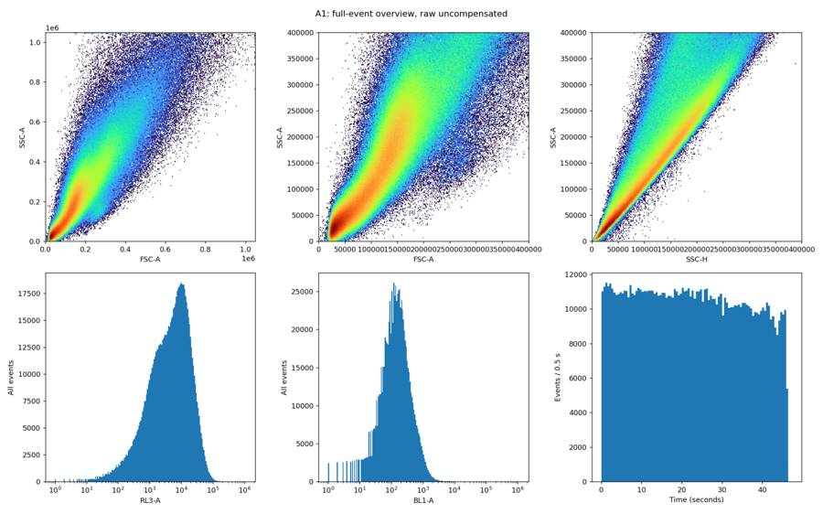
8
agent
The labels and voltages match the experiment, and FlowKit reads Time in seconds using the FCS timestep. I’m now comparing scatter, fluorescence, and event-rate plots across all 42 wells; all plots and counts will use every event.
tool call · exec
text(await tools.apply_patch("*** Begin Patch\n*** Add File: /task/outputs/survey.py\n+\"\"\"Full-event exploratory plots and acquisition summaries; no event subsampling.\"\"\"\n+from pathlib import Path\n+import gc\n+import json\n+import numpy as np\n+import pandas as pd\n+import flowkit as fk\n+import matplotlib\n+matplotlib.use('Agg')\n+import matplotlib.pyplot as plt\n+from matplotlib.colors import LogNorm\n+\n+BASE = Path('/task')\n+OUT = BASE / 'outputs'\n+LAYOUT = pd.read_csv(BASE / 'inputs/plate_layout.csv')\n+TX = fk.transforms.LogicleTransform(1048576, 0.5, 4.5, 0)\n+FL_EDGES = np.linspace(-0.15, 1.05, 241)\n+LIN_EDGES = np.linspace(0, 1060000, 181)\n+ZOOM_EDGES = np.linspace(0, 500000, 201)\n+SC_LOG_EDGES = np.linspace(3, 6.05, 181)\n+CH = ['FSC-A','SSC-A','SSC-H','RL3-A','BL1-A','VL1-A']\n+\n+def hist(x,y,xe,ye):\n+ return np.histogram2d(x,y,bins=(xe,ye))[0].astype('int64')\n+\n+def main():\n+ rows=[]\n+ for rec in LAYOUT.itertuples(index=False):\n+ sample=fk.Sample(str(BASE/'inputs/raw'/rec.file))\n+ e=sample.get_events(source='raw',subsample=False)\n+ ix={c:sample.get_channel_index(c) for c in sample.pnn_labels}\n+ md=sample.get_metadata()\n+ t=e[:,ix['Time']]\n+ te=np.arange(0,np.ceil(t.max())+0.5,0.5)\n+ rate=np.histogram(t,bins=te)[0]/0.5\n+ tb=np.searchsorted(te,t,side='right')-1\n+ tm=np.full((len(CH),len(rate)),np.nan)\n+ for b in range(len(rate)):\n+ z=e[tb==b]\n+ if len(z): tm[:,b]=np.median(z[:,[ix[c] for c in CH]],axis=0)\n+ fsc=e[:,ix['FSC-A']];ssc=e[:,ix['SSC-A']];ssh=e[:,ix['SSC-H']]\n+ rl=TX.apply(e[:,ix['RL3-A']]);bl=TX.apply(e[:,ix['BL1-A']])\n+ payload=dict(time_edges=te,time_rate=rate,time_medians=tm,fl_edges=FL_EDGES,\n+ linear_edges=LIN_EDGES,zoom_edges=ZOOM_EDGES,sclog_edges=SC_LOG_EDGES,\n+ cells_full=hist(fsc,ssc,LIN_EDGES,LIN_EDGES),\n+ cells_zoom=hist(fsc,ssc,ZOOM_EDGES,ZOOM_EDGES),\n+ cells_log=hist(np.log10(np.maximum(fsc,1)),np.log10(np.maximum(ssc,1)),SC_LOG_EDGES,SC_LOG_EDGES),\n+ singlets_full=hist(ssh,ssc,LIN_EDGES,LIN_EDGES),\n+ singlets_zoom=hist(ssh,ssc,ZOOM_EDGES,ZOOM_EDGES),\n+ rl_hist=np.histogram(rl,bins=FL_EDGES)[0],bl_hist=np.histogram(bl,bins=FL_EDGES)[0],\n+ rl_ssc=hist(rl,ssc,FL_EDGES,ZOOM_EDGES),bl_ssc=hist(bl,ssc,FL_EDGES,ZOOM_EDGES))\n+ np.savez_compressed(OUT/'diagnostics'/f'{rec.well}_survey.npz',**payload)\n+ row=dict(file=rec.file,well=rec.well,total=len(e),time_min=t.min(),time_max=t.max(),\n+ time_backwards=int((np.diff(t)<0).sum()),max_time_gap=float(np.diff(t).max()),\n+ median_rate=float(np.median(rate[2:-2])),rate_min_interior=float(np.min(rate[2:-2])),\n+ rate_max_interior=float(np.max(rate[2:-2])),metadata_well=md.get('wellid'),\n+ date=md.get('date'),btim=md.get('btim'),etim=md.get('etim'),\n+ timestep=md.get('timestep'),volume_nl=md.get('vol'),coincident_count=md.get('#coincidentcount'),\n+ lost=md.get('lost'),channel_labels=';'.join(sample.pnn_labels),\n+ stain_labels=';'.join(sample.pns_labels),\n+ voltages=';'.join(f'{c}:{md.get(\"p\"+str(ix[c]+1)+\"v\")}' for c in ['FSC-A','SSC-A','BL1-A','VL1-A','RL3-A']),\n+ nonfinite=int((~np.isfinite(e)).sum()))\n+ for c in sample.pnn_labels:\n+ if c=='Time':continue\n+ v=e[:,ix[c]];maxval=float(sample.channels.iloc[ix[c]].pnr)-1\n+ row[c+'_sat_pct']=100*float((v>=maxval).mean())\n+ row[c+'_below_zero_pct']=100*float((v<0).mean())\n+ for c in CH:\n+ for q,v in zip([1,5,25,50,75,95,99],np.percentile(e[:,ix[c]],[1,5,25,50,75,95,99])):\n+ row[c+'_q'+str(q)]=v\n+ rows.append(row)\n+ pd.DataFrame(rows).to_csv(OUT/'diagnostics/survey_summary.csv',index=False)\n+ print(rec.well,len(e),round(t.max(),2),'seconds','median rate',round(row['median_rate']),flush=True)\n+ del e,sample,payload,rl,bl,fsc,ssc,ssh\n+ gc.collect()\n+ make_montages()\n+\n+def make_montages():\n+ for kind,edge,xlab,ylab in [\n+ ('cells_full','linear_edges','FSC-A','SSC-A'),\n+ ('cells_zoom','zoom_edges','FSC-A','SSC-A'),\n+ ('cells_log','sclog_edges','log10 FSC-A','log10 SSC-A'),\n+ ('singlets_zoom','zoom_edges','SSC-H','SSC-A'),\n+ ('rl_ssc','fl_edges','RL3-A, logicle','SSC-A'),\n+ ('bl_ssc','fl_edges','BL1-A, logicle','SSC-A')]:\n+ for page,part in enumerate([LAYOUT.iloc[:24],LAYOUT.iloc[24:]],1):\n+ fig,axes=plt.subplots(4,6,figsize=(18,12),squeeze=False)\n+ for ax,rec in zip(axes.flat,part.itertuples(index=False)):\n+ d=np.load(OUT/'diagnostics'/f'{rec.well}_survey.npz')\n+ ye=d['zoom_edges'] if kind in ['rl_ssc','bl_ssc'] else d[edge]\n+ ax.pcolormesh(d[edge],ye,d[kind].T,norm=LogNorm(vmin=1),cmap='turbo',rasterized=True)\n+ ax.set_title(rec.well,fontsize=11)\n+ ax.tick_params(labelsize=7)\n+ if 'log' not in xlab and 'logicle' not in xlab:ax.ticklabel_format(axis='both',style='sci',scilimits=(0,0))\n+ for ax in list(axes.flat)[len(part):]:ax.axis('off')\n+ fig.supxlabel(xlab);fig.supylabel(ylab)\n+ fig.suptitle(f'{kind}: all events, uncompensated; page {page}')\n+ fig.tight_layout();fig.savefig(OUT/'plots'/f'survey_{kind}_{page}.png',dpi=140);plt.close(fig)\n+ for page,part in enumerate([LAYOUT.iloc[:24],LAYOUT.iloc[24:]],1):\n+ fig,axes=plt.subplots(4,6,figsize=(18,11),squeeze=False)\n+ for ax,rec in zip(axes.flat,part.itertuples(index=False)):\n+ d=np.load(OUT/'diagnostics'/f'{rec.well}_survey.npz')\n+ ax.stai
… [646 more characters not shown]tool output
Script completed
Wall time 1.2 seconds
Output:
{}
{"chunk_id":"02070d","wall_time_seconds":1.000201269,"session_id":42033,"original_token_count":0,"output":""}tool call · exec
text(await tools.exec_command({cmd:"python - <<'PY'\nimport inspect\nfrom flowkit._models.gating_results import GatingResults\nimport flowkit as fk\nprint(inspect.signature(GatingResults.get_gate_count))\nprint(inspect.signature(GatingResults.get_gate_membership))\nprint(inspect.signature(fk.parse_gating_xml))\nprint(inspect.getsource(fk.GatingStrategy._preprocess_sample_events))\nPY","max_output_tokens":5000}));
text(await tools.exec_command({cmd:"tail -6 /task/outputs/diagnostics/survey.log","max_output_tokens":1000}));
tool output
Script completed
Wall time 0.8 seconds
Output:
{"chunk_id":"11e20e","wall_time_seconds":0.55941965,"exit_code":0,"original_token_count":1096,"output":"(self, gate_name, gate_path=None)\n(self, gate_name, gate_path=None)\n(xml_file_or_path)\n def _preprocess_sample_events(self, sample, gate, cache_events=False):\n # TODO: consider making method public, could be useful for users\n pnn_labels = sample.pnn_labels\n pns_labels = sample.pns_labels\n # FlowJo replaces slashes with underscores, so make a set of labels with that replacement\n flowjo_pnn_labels = [label.replace('/', '_') for label in pnn_labels]\n\n dim_indices = []\n dim_ids = []\n dim_comp_refs = set()\n new_dims = []\n new_dim_ids = []\n dim_xform = []\n\n for dim in gate.dimensions:\n dim_comp = False\n if dim.compensation_ref not in [None, 'uncompensated']:\n dim_comp_refs.add(dim.compensation_ref)\n dim_comp = True\n\n if isinstance(dim, dimension.RatioDimension):\n # dimension is a transform of other dimensions\n new_dims.append(dim)\n new_dim_ids.append(dim.ratio_ref)\n continue\n elif isinstance(dim, dimension.QuadrantDivider):\n dim_id = dim.dimension_ref\n else:\n dim_id = dim.id\n\n if dim_id in pnn_labels:\n dim_indices.append(pnn_labels.index(dim_id))\n elif dim_id in pns_labels:\n dim_indices.append(pns_labels.index(dim_id))\n elif dim_id in flowjo_pnn_labels:\n dim_indices.append(flowjo_pnn_labels.index(dim_id))\n else:\n # for a referenced comp, the label may have been the\n # fluorochrome instead of the channel's PnN label. If so,\n # the referenced matrix object will also have the detector\n # names that will match\n if not dim_comp:\n raise LookupError(\n \"%s is not found as a channel label or channel reference in %s\" % (dim_id, sample)\n )\n matrix = self.comp_matrices[dim.compensation_ref]\n try:\n matrix_dim_idx = matrix.fluorochromes.index(dim_id)\n except ValueError:\n raise ValueError(\"%s not found in list of matrix fluorochromes\" % dim_id)\n detector = matrix.detectors[matrix_dim_idx]\n dim_indices.append(pnn_labels.index(detector))\n\n dim_ids.append(dim_id)\n\n dim_xform.append(dim.transformation_ref)\n\n # compensate will cache events regardless of cache_events arg value\n # this is much more universally useful to speed up analysis as the\n # same comp matrix is nearly always used for all sample gates.\n events = self._compensate_sample(dim_comp_refs, sample)\n\n for i, dim in enumerate(dim_indices):\n if dim_xform[i] is not None:\n if len(dim_comp_refs) > 0:\n comp_ref = list(dim_comp_refs)[0]\n else:\n comp_ref = None\n\n xform = self.transformations[dim_xform[i]]\n\n if cache_events:\n cached_events = self._get_cached_preprocessed_events(\n sample.id,\n comp_ref,\n dim_xform[i],\n dim_idx=dim\n )\n else:\n cached_events = None\n\n if cached_events is not None:\n events[:, [dim]] = cached_events\n else:\n xform_events = xform.apply(events[:, [dim]])\n events[:, [dim]] = xform_events\n if cache_events:\n self._cache_preprocessed_events(\n xform_events,\n sample.id,\n comp_ref,\n dim_xform[i],\n dim_idx=dim\n )\n\n df_events = pd.DataFrame(events[:, dim_indices], columns=dim_ids)\n if len(new_dims) > 0:\n new_dim_events = self._process_new_dims(sample, new_dims)\n df_new_dim_events = pd.DataFrame(new_dim_events, columns=new_dim_ids)\n df_events = pd.concat([df_events, df_new_dim_events], axis=1)\n\n return df_events\n\n"}
{"chunk_id":"ddbacf","wall_time_seconds":0.00000364,"exit_code":0,"original_token_count":52,"output":"A1 978726 46.25 seconds median rate 21505\nA2 935707 97.95 seconds median rate 9712\nA3 925910 97.66 seconds median rate 9719\nA4 892332 97.74 seconds median rate 9275\nA5 986514 97.87 seconds median rate 10271\n"}tool call · exec
text(await tools.exec_command({cmd:"python - <<'PY'\nimport pandas as pd\np=pd.read_csv('/task/outputs/diagnostics/survey_summary.csv')\nprint(p[['well','total','time_max','median_rate','rate_min_interior','rate_max_interior','FSC-A_sat_pct','SSC-A_sat_pct','BL1-A_sat_pct','RL3-A_sat_pct']].to_string(index=False))\nimport sys\nsys.path.insert(0,'/task/outputs')\nfrom survey import *\nfig,axes=plt.subplots(2,3,figsize=(15,9))\nfor ax,kind,xe,ye in [(axes[0,0],'cells_log','sclog_edges','sclog_edges'),(axes[0,1],'singlets_zoom','zoom_edges','zoom_edges'),(axes[0,2],'rl_ssc','fl_edges','zoom_edges'),(axes[1,0],'bl_ssc','fl_edges','zoom_edges')]:\n d=np.load(OUT/'diagnostics/A1_survey.npz');ax.pcolormesh(d[xe],d[ye],d[kind].T,norm=LogNorm(),cmap='turbo');ax.set_title(kind)\nfor ax,ch in [(axes[1,1],'rl'),(axes[1,2],'bl')]:\n ax.stairs(d[ch+'_hist'],d['fl_edges']);ax.set_title(ch+' logicle histogram')\nfig.tight_layout();fig.savefig(OUT/'plots/A1_transformed.png',dpi=130)\nPY","max_output_tokens":1500}));
image((await tools.view_image({path:"/task/outputs/plots/A1_transformed.png"})).image_url);
tool output
Script completed Wall time 1.3 seconds Output:
{"chunk_id":"917791","wall_time_seconds":1.164688876,"exit_code":0,"original_token_count":466,"output":"well total time_max median_rate rate_min_interior rate_max_interior FSC-A_sat_pct SSC-A_sat_pct BL1-A_sat_pct RL3-A_sat_pct\n A1 978726 46.250 21505.0 16978.0 23012.0 0.188817 1.173566 0.000817 0.000000\n A2 935707 97.949 9712.0 6550.0 11084.0 0.072138 0.500263 0.002244 0.000000\n A3 925910 97.658 9719.0 6094.0 10764.0 0.048277 0.466676 0.001836 0.000000\n A4 892332 97.738 9275.0 7558.0 10108.0 0.075196 0.530632 0.007172 0.000000\n A5 986514 97.871 10271.0 6808.0 11428.0 0.074809 0.612460 0.009630 0.000000\n A6 755396 97.106 7938.0 5734.0 8708.0 0.032301 0.348427 0.010855 0.000000\n A7 848859 97.919 8832.0 6726.0 9598.0 0.089296 0.533540 0.002710 0.000000\n A8 710140 97.939 7360.0 5108.0 8094.0 0.068156 0.441462 0.005351 0.000141\n A9 958681 97.821 9943.0 6932.0 11036.0 0.319189 1.083989 0.001982 0.000417\n A10 870505 97.699 9118.0 5396.0 10166.0 0.137392 0.632277 0.003446 0.000115\n A11 844586 97.924 8736.0 6970.0 10752.0 0.042861 0.378647 0.007696 0.000000\n A12 947510 97.898 9866.0 5920.0 11944.0 0.093403 0.545746 0.011187 0.000000\n B1 733754 97.937 7626.0 4496.0 8416.0 0.106575 0.475227 0.000000 0.000136\n"}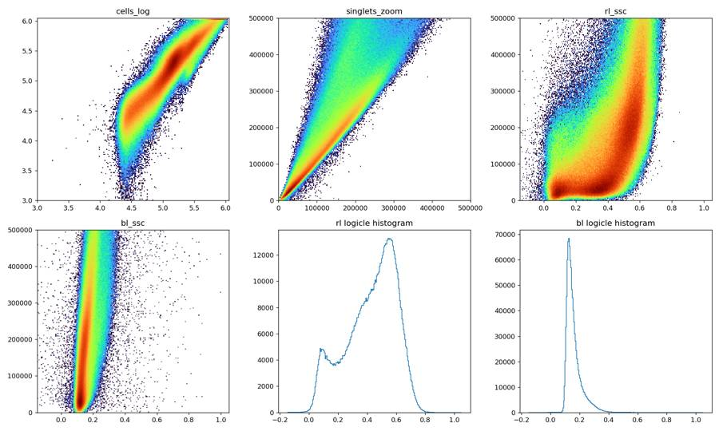
tool call · exec
text(await tools.exec_command({cmd:"tail -8 /task/outputs/diagnostics/survey.log && python - <<'PY'\nimport flowkit as fk,numpy as np\nx=fk.transforms.LogicleTransform(1048576,.5,4.5,0)\nfor v in [-1000,-100,0,100,200,300,400,500,800,1000,1500,2000,3000,5000,10000]:print(v,x.apply(np.array([v],dtype=float))[0])\nPY","max_output_tokens":1000}));
tool output
Script completed
Wall time 0.7 seconds
Output:
{"chunk_id":"9fb7c0","wall_time_seconds":0.538188154,"exit_code":0,"original_token_count":174,"output":"B9 862070 97.96 seconds median rate 8923\nB10 1083648 97.78 seconds median rate 11368\nB11 988574 97.92 seconds median rate 10319\nB12 904103 97.78 seconds median rate 9350\nC1 624718 97.76 seconds median rate 6449\nC2 695572 97.79 seconds median rate 7305\nC3 656321 97.72 seconds median rate 6949\nC4 679504 97.8 seconds median rate 7184\n-1000 -0.08308617185815864\n-100 0.08327642608649269\n0 0.1111111111111111\n100 0.13894579613572952\n200 0.16573893940523296\n300 0.19063765827359397\n400 0.21318108753019682\n500 0.23329305284090643\n800 0.28113967417683144\n1000 0.30530839408038085\n1500 0.3497503603179227\n2000 0.3810191860365646\n3000 0.42426769656664776\n5000 0.477343264142555\n10000 0.5474038754790412\n"}12
agent
The first wells contain roughly 700,000–1,000,000 events each. Most run for about 98 seconds; A1 has a shorter run and a higher event rate, so I’ll check its flow stability before deciding whether that difference warrants exclusion. I’m also checking fluorescence boundaries after scatter and singlet gating, where debris will have less influence.
tool call · exec
text(await tools.exec_command({cmd:"python - <<'PY'\nimport pandas as pd\np=pd.read_csv('/task/outputs/diagnostics/survey_summary.csv')\nprint(p[['well','total','time_max','median_rate','rate_min_interior','rate_max_interior','max_time_gap','FSC-A_sat_pct','SSC-A_sat_pct','BL1-A_sat_pct','RL3-A_sat_pct']].to_string(index=False))\nPY","max_output_tokens":4000}));
text(await tools.write_stdin({session_id:42033,chars:"","yield_time_ms":1000,"max_output_tokens":1000}));
tool output
Script completed
Wall time 5.2 seconds
Output:
{"chunk_id":"677b63","wall_time_seconds":0.058126105,"exit_code":0,"original_token_count":1332,"output":"well total time_max median_rate rate_min_interior rate_max_interior max_time_gap FSC-A_sat_pct SSC-A_sat_pct BL1-A_sat_pct RL3-A_sat_pct\n A1 978726 46.250 21505.0 16978.0 23012.0 0.006 0.188817 1.173566 0.000817 0.000000\n A2 935707 97.949 9712.0 6550.0 11084.0 0.020 0.072138 0.500263 0.002244 0.000000\n A3 925910 97.658 9719.0 6094.0 10764.0 0.033 0.048277 0.466676 0.001836 0.000000\n A4 892332 97.738 9275.0 7558.0 10108.0 0.020 0.075196 0.530632 0.007172 0.000000\n A5 986514 97.871 10271.0 6808.0 11428.0 0.053 0.074809 0.612460 0.009630 0.000000\n A6 755396 97.106 7938.0 5734.0 8708.0 0.043 0.032301 0.348427 0.010855 0.000000\n A7 848859 97.919 8832.0 6726.0 9598.0 0.035 0.089296 0.533540 0.002710 0.000000\n A8 710140 97.939 7360.0 5108.0 8094.0 0.025 0.068156 0.441462 0.005351 0.000141\n A9 958681 97.821 9943.0 6932.0 11036.0 0.053 0.319189 1.083989 0.001982 0.000417\n A10 870505 97.699 9118.0 5396.0 10166.0 0.048 0.137392 0.632277 0.003446 0.000115\n A11 844586 97.924 8736.0 6970.0 10752.0 0.044 0.042861 0.378647 0.007696 0.000000\n A12 947510 97.898 9866.0 5920.0 11944.0 0.020 0.093403 0.545746 0.011187 0.000000\n B1 733754 97.937 7626.0 4496.0 8416.0 0.039 0.106575 0.475227 0.000000 0.000136\n B2 728886 97.867 7523.0 5794.0 8346.0 0.026 0.132119 0.532731 0.000000 0.000137\n B3 667298 97.940 6935.0 5184.0 7830.0 0.028 0.065188 0.350368 0.000000 0.000150\n B4 598212 97.862 6281.0 3504.0 7632.0 0.037 0.044800 0.314939 0.000000 0.000334\n B5 837561 97.905 8770.0 5464.0 9686.0 0.028 0.044534 0.411552 0.000000 0.000000\n B6 877336 97.836 9090.0 4992.0 10612.0 0.025 0.051520 0.474505 0.000114 0.000000\n B7 954909 97.900 10308.0 560.0 18016.0 0.158 0.118126 0.560786 0.000000 0.000628\n B8 918778 97.751 9905.0 32.0 15272.0 0.068 0.042448 0.373322 0.000109 0.000109\n B9 862070 97.962 8923.0 7066.0 10528.0 0.031 0.054636 0.399504 0.000348 0.000000\n B10 1083648 97.779 11368.0 6360.0 13136.0 0.040 0.064597 0.604901 0.000923 0.000000\n B11 988574 97.925 10319.0 6538.0 11538.0 0.022 0.034899 0.437701 0.004046 0.000101\n B12 904103 97.779 9350.0 7634.0 10380.0 0.047 0.029090 0.383253 0.011503 0.000000\n C1 624718 97.765 6449.0 5080.0 7162.0 0.041 0.005442 0.150788 0.000000 0.000160\n C2 695572 97.790 7305.0 3862.0 8480.0 0.021 0.009776 0.195666 0.000288 0.000288\n C3 656321 97.719 6949.0 2428.0 7790.0 0.023 0.040377 0.285226 0.000152 0.000152\n C4 679504 97.801 7184.0 3166.0 7932.0 0.015 0.012068 0.200293 0.000000 0.000147\n C5 689593 97.862 7130.0 5592.0 8416.0 0.044 0.007541 0.184747 0.001885 0.000580\n C6 891011 97.567 9299.0 4500.0 16296.0 0.017 0.015151 0.314138 0.003030 0.000000\n C7 649735 97.906 6687.0 5244.0 7528.0 0.034 0.013852 0.185768 0.000000 0.000616\n C8 639518 97.873 6630.0 4990.0 7278.0 0.017 0.008444 0.235803 0.000000 0.000000\n C9 801299 97.900 8265.0 6440.0 9118.0 0.025 0.040809 0.321977 0.000000 0.000125\n C10 927162 97.483 9785.0 4740.0 11192.0 0.018 0.040230 0.411686 0.000000 0.000000\n C11 868685 97.535 9029.0 7482.0 14968.0 0.027 0.037873 0.343162 0.000115 0.000230\n"}
{"chunk_id":"89a2f1","wall_time_seconds":5.001208266,"session_id":42033,"original_token_count":0,"output":""}tool call · exec
text(await tools.exec_command({cmd:"tail -7 /task/outputs/diagnostics/survey.log && ls /task/outputs/plots","max_output_tokens":1200}));
tool output
Script completed
Wall time 0.0 seconds
Output:
{"chunk_id":"ccc271","wall_time_seconds":0.00000359,"exit_code":0,"original_token_count":105,"output":"C12 578214 97.76 seconds median rate 6024\nD1 800840 97.94 seconds median rate 8281\nD2 894591 97.93 seconds median rate 9274\nD3 915097 97.74 seconds median rate 9467\nD4 925805 97.53 seconds median rate 9590\nD5 153195 97.77 seconds median rate 1592\nD6 726651 97.93 seconds median rate 7571\nA1_transformed.png\ninitial_A1.png\nsurvey_cells_full_1.png\nsurvey_cells_full_2.png\nsurvey_cells_zoom_1.png\nsurvey_cells_zoom_2.png\n"}tool call · exec
for(const path of ["/task/outputs/plots/survey_cells_zoom_1.png","/task/outputs/plots/survey_cells_zoom_2.png"])image((await tools.view_image({path})).image_url);
tool output
Script completed Wall time 0.1 seconds Output:
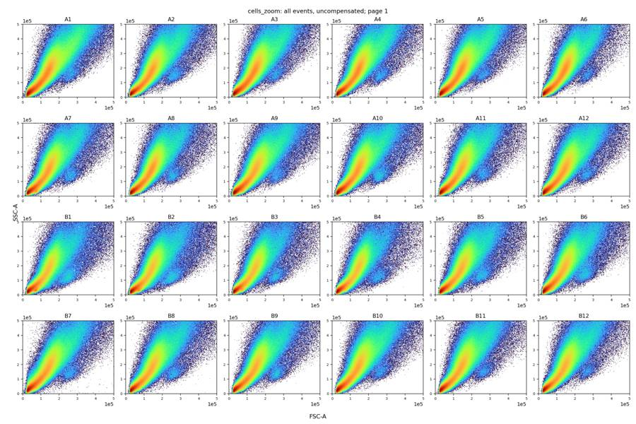
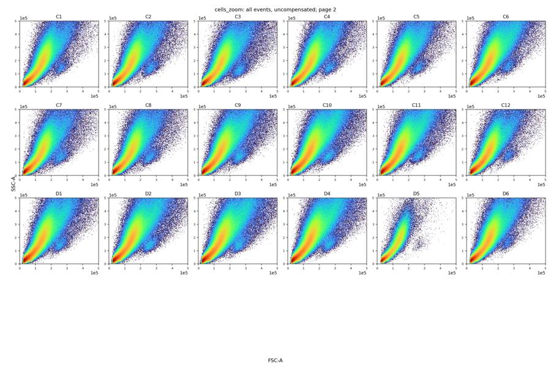
tool call · exec
text(await tools.write_stdin({session_id:42033,chars:"","yield_time_ms":1000,"max_output_tokens":1000}));
for(const path of ["/task/outputs/plots/survey_rates_1.png","/task/outputs/plots/survey_rates_2.png","/task/outputs/plots/survey_singlets_zoom_2.png"])image((await tools.view_image({path})).image_url);
tool output
Script completed Wall time 0.1 seconds Output:
{"chunk_id":"296004","wall_time_seconds":0.00000262,"exit_code":0,"original_token_count":0,"output":""}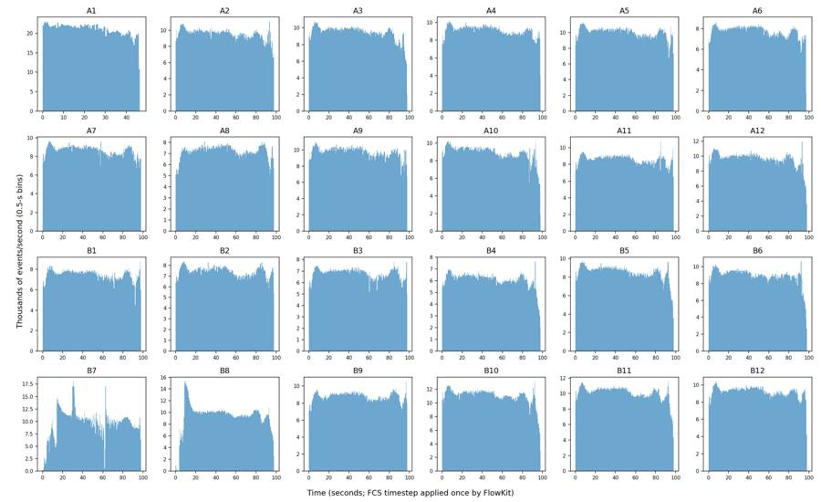
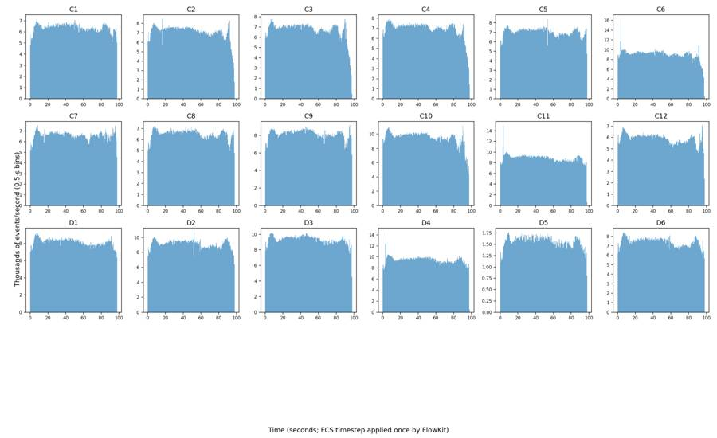
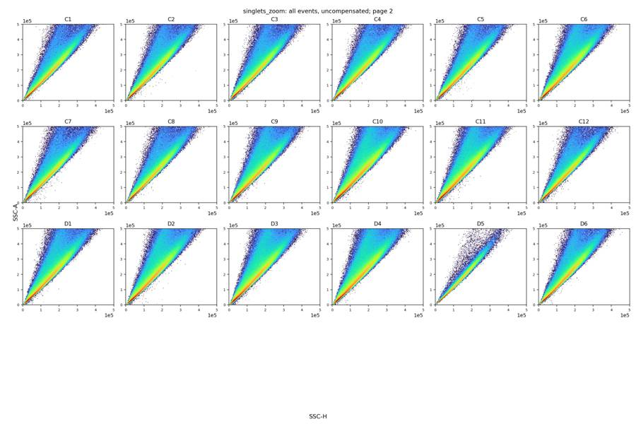
16
agent
The plate-wide plots show two clear flow anomalies: B7 has repeated interruptions and bursts, and B8 has an extended low-flow start followed by a burst. D5 has fewer events but steady flow; I’ll assess its gated counts before deciding whether it is usable.
tool call · exec
text(await tools.apply_patch("*** Begin Patch\n*** Add File: /task/outputs/analyze_plate.py\n+\"\"\"Reproduce the shared FlowKit gates, full-event counts, and diagnostic plots.\"\"\"\n+from pathlib import Path\n+import argparse\n+import gc\n+import json\n+import importlib.metadata\n+import numpy as np\n+import pandas as pd\n+import flowkit as fk\n+import matplotlib\n+matplotlib.use('Agg')\n+import matplotlib.pyplot as plt\n+from matplotlib.colors import LogNorm\n+\n+ROOT=Path('/task')\n+OUT=ROOT/'outputs'\n+LAYOUT=pd.read_csv(ROOT/'inputs/plate_layout.csv')\n+POPS=['Cells','Singlets','Live','GFP_pos']\n+PARENTS=['all_events','Cells','Singlets','Live']\n+CELLS=np.array([(50000,30000),(85000,22000),(260000,80000),(650000,300000),\n+ (1000000,750000),(1000000,1000000),(300000,1000000),\n+ (120000,420000),(50000,100000)],dtype=float)\n+SINGLETS=np.array([(0,0),(950000,1000000),(600000,1000000),(0,10000)],dtype=float)\n+LIVE_MAX=400.0\n+GFP_MIN=1000.0\n+DISPLAY_TX=fk.transforms.LogicleTransform(1048576,0.5,4.5,0)\n+FL_EDGES=np.linspace(-.15,1.05,301)\n+SC_EDGES=np.linspace(0,1060000,241)\n+FL_TICKS=np.array([-1000,0,1000,10000,100000,1000000],dtype=float)\n+\n+def dim(channel,**kwargs):\n+ return fk.Dimension(channel,compensation_ref='uncompensated',**kwargs)\n+\n+def build_strategy():\n+ s=fk.GatingStrategy()\n+ s.add_gate(fk.gates.PolygonGate('Cells',[dim('FSC-A'),dim('SSC-A')],CELLS.tolist()),('root',))\n+ s.add_gate(fk.gates.PolygonGate('Singlets',[dim('SSC-H'),dim('SSC-A')],SINGLETS.tolist()),('root','Cells'))\n+ s.add_gate(fk.gates.RectangleGate('Live',[dim('RL3-A',range_max=LIVE_MAX)]),('root','Cells','Singlets'))\n+ s.add_gate(fk.gates.RectangleGate('GFP_pos',[dim('BL1-A',range_min=GFP_MIN)]),('root','Cells','Singlets','Live'))\n+ return s\n+\n+def hist2(x,y,xe=SC_EDGES,ye=SC_EDGES):\n+ return np.histogram2d(x,y,bins=(xe,ye))[0].astype(np.int64)\n+\n+def outline(ax,verts):\n+ p=np.vstack([verts,verts[0]])\n+ ax.plot(p[:,0],p[:,1],color='magenta',lw=1.4)\n+\n+def fluorescence_axis(ax):\n+ ax.set_xticks(DISPLAY_TX.apply(FL_TICKS),['−1k','0','1k','10k','100k','1M'])\n+ ax.set_xlim(FL_EDGES[0],FL_EDGES[-1])\n+\n+def plot_well(rec,d,counts):\n+ fig,axes=plt.subplots(2,3,figsize=(16,9))\n+ for ax,key,xe,ye,title,xlabel,ylabel in [\n+ (axes[0,0],'cells',SC_EDGES,SC_EDGES,'Cells / all events','FSC-A','SSC-A'),\n+ (axes[0,1],'singlets',SC_EDGES,SC_EDGES,'Singlets / Cells','SSC-H','SSC-A'),\n+ (axes[0,2],'live',FL_EDGES,SC_EDGES,'Live / Singlets','Zombie NIR, RL3-A (logicle display)','SSC-A'),\n+ (axes[1,0],'gfp',FL_EDGES,SC_EDGES,'GFP_pos / Live','GFP, BL1-A (logicle display)','SSC-A')]:\n+ ax.pcolormesh(xe,ye,np.ma.masked_equal(d[key].T,0),norm=LogNorm(vmin=1),cmap='turbo',rasterized=True)\n+ ax.set(title=title,xlabel=xlabel,ylabel=ylabel)\n+ if key in ['live','gfp']:fluorescence_axis(ax)\n+ outline(axes[0,0],CELLS);outline(axes[0,1],SINGLETS)\n+ axes[0,2].axvline(DISPLAY_TX.apply(np.array([LIVE_MAX]))[0],color='magenta',lw=1.4)\n+ axes[1,0].axvline(DISPLAY_TX.apply(np.array([GFP_MIN]))[0],color='magenta',lw=1.4)\n+ ax=axes[1,1]\n+ for name,color in [('rl_hist','tab:red'),('bl_hist','tab:green')]:\n+ h=d[name]\n+ ax.stairs(h/h.sum(),FL_EDGES,color=color,label='Zombie NIR on Singlets' if name=='rl_hist' else 'GFP on Live')\n+ ax.axvline(DISPLAY_TX.apply(np.array([LIVE_MAX]))[0],color='tab:red',ls='--')\n+ ax.axvline(DISPLAY_TX.apply(np.array([GFP_MIN]))[0],color='tab:green',ls='--')\n+ fluorescence_axis(ax);ax.set(xlabel='Raw fluorescence (logicle display)',ylabel='Fraction of parent / bin',title='Fluorescence boundary check');ax.legend(fontsize=8)\n+ ax=axes[1,2]\n+ for name,col in [('all','gray'),('Cells','tab:blue'),('Live','tab:orange')]:\n+ ax.stairs(d['rate_'+name],d['time_edges'],label=name,color=col)\n+ ax.set(xlabel='Time (s)',ylabel='Events/s in 0.5-s bins',title='Acquisition quality (no Time gate)');ax.legend(fontsize=8)\n+ fig.suptitle(f'{rec.well} | total {counts[0]:,} → Cells {counts[1]:,} → Singlets {counts[2]:,} → Live {counts[3]:,} → GFP_pos {counts[4]:,}\\nAll events used; raw uncompensated gates; magenta = shared gate boundaries',fontsize=12)\n+ fig.tight_layout();fig.savefig(OUT/'plots'/f'gating_{rec.well}.png',dpi=140);plt.close(fig)\n+\n+def main(wells=None):\n+ strategy=build_strategy()\n+ with open(OUT/'gates.xml','wb') as fh:fk.export_gatingml(strategy,fh)\n+ reloaded=fk.parse_gating_xml(str(OUT/'gates.xml'))\n+ assert len(reloaded.get_gate_ids())==4\n+ rows=[];qrows=[];timedata=[]\n+ selected=LAYOUT if wells is None else LAYOUT[LAYOUT.well.isin(wells)]\n+ for rec in selected.itertuples(index=False):\n+ sample=fk.Sample(str(ROOT/'inputs/raw'/rec.file))\n+ e=sample.get_events(source='raw',subsample=False)\n+ ix={c:sample.get_channel_index(c) for c in sample.pnn_labels}\n+ res=strategy.gate_sample(sample)\n+ rr=reloaded.gate_sample(sample)\n+ masks={pop:res.get_gate_membership(pop) for pop in POPS}\n+ counts=[len(e)]+[int(res.get_gate_count(p)) for p in POPS]\n+ for j,pop in enumerate(POPS):\n+ assert np.array_equal(masks[pop],rr.get_gate_membership(pop)),(rec.well,pop,'XML membership mismatch')\n+ if j:assert not np.any(masks[pop]&~masks[POPS[j-1]])\n+ rows.append(dict(file=rec.file,well=rec.well,population=pop,count=counts[j+1],parent_population=PARENTS[j],pct_of_parent=100.0*counts[j+1]/counts[j] if counts[j] else 0.0))\n+ pd.DataFrame(rows).to_csv(OUT/'counts.csv',index=False)\n+ fsc=e[:,ix['FSC-A']];ssc=e[:,ix['SSC-A']];ssh=e[:,ix['SSC-H']]\n+ rl=DISPLAY_TX.apply(e[:,ix['RL3-A']]);bl=DISPLAY_TX.apply(e[:,ix['BL1-A']]);t=e[:,ix['Time']]\n+ te=np.arange(0,np.ceil(t.max())+.5,.5)\n+ d=dict(cells=hist2(fsc,ssc),singlets=hist2(ssh[masks['Cells']],ssc[
… [3,325 more characters not shown]tool output
Script completed
Wall time 1.2 seconds
Output:
{}
{"chunk_id":"c6d2ad","wall_time_seconds":1.000209659,"session_id":79367,"original_token_count":0,"output":""}tool call · exec
text(await tools.exec_command({cmd:"tail -5 /task/outputs/diagnostics/gating_preview.log && python - <<'PY'\nimport pandas as pd\ns=pd.read_csv('/task/outputs/diagnostics/survey_summary.csv')\nprint(s[['well','total','time_max','median_rate','rate_min_interior','rate_max_interior','FSC-A_sat_pct','SSC-A_sat_pct','BL1-A_sat_pct','RL3-A_sat_pct']].tail(7).to_string(index=False))\nfor key in ['date','voltages','channel_labels','stain_labels','volume_nl','lost']:\n print(key,s[key].value_counts().to_dict())\nprint('Time reversed:',s.time_backwards.sum(),'Nonfinite:',s.nonfinite.sum(),'Metadata mismatches:',s[s.well!=s.metadata_well].well.tolist())\nPY","max_output_tokens":3000}));
image((await tools.view_image({path:"/task/outputs/plots/gating_A1.png"})).image_url);
tool output
Script completed Wall time 0.2 seconds Output:
{"chunk_id":"2381c6","wall_time_seconds":0.050886879,"exit_code":0,"original_token_count":478,"output":"A1 [978726, 780005, 540211, 51819, 163] Live% 9.59 GFP% 0.31\nA2 [935707, 734251, 579172, 39777, 234] Live% 6.87 GFP% 0.59\nB1 [733754, 548471, 436951, 61954, 13] Live% 14.18 GFP% 0.02\nC1 [624718, 458157, 383115, 13638, 161] Live% 3.56 GFP% 1.18\nD5 [153195, 113275, 102925, 3470, 20] Live% 3.37 GFP% 0.58\nwell total time_max median_rate rate_min_interior rate_max_interior FSC-A_sat_pct SSC-A_sat_pct BL1-A_sat_pct RL3-A_sat_pct\n C12 578214 97.755 6024.0 4634.0 7052.0 0.020754 0.176924 0.000173 0.000000\n D1 800840 97.943 8281.0 6904.0 9296.0 0.020354 0.275211 0.000250 0.000125\n D2 894591 97.932 9274.0 6392.0 10692.0 0.027834 0.326183 0.001565 0.000224\n D3 915097 97.745 9467.0 7538.0 10260.0 0.073435 0.468256 0.000219 0.000000\n D4 925805 97.528 9590.0 7780.0 14474.0 0.042234 0.426764 0.001512 0.000000\n D5 153195 97.768 1592.0 1154.0 1768.0 0.001958 0.075720 0.005222 0.000000\n D6 726651 97.928 7571.0 6116.0 8426.0 0.006468 0.199958 0.002477 0.000138\ndate {'06-Mar-2023': 42}\nvoltages {'FSC-A:30;SSC-A:300;BL1-A:250;VL1-A:300;RL3-A:300': 42}\nchannel_labels {'Time;FSC-A;SSC-A;BL1-A;RL3-A;VL1-A;FSC-H;SSC-H;BL1-H;RL3-H;VL1-H;FSC-W;SSC-W;BL1-W;RL3-W;VL1-W': 42}\nstain_labels {'Time;FSC-A;SSC-A;AAV-GFP-GFP-A;LiveDead-Zombie NIR-A;BV421-NCAM-A;FSC-H;SSC-H;AAV-GFP-GFP-H;LiveDead-Zombie NIR-H;BV421-NCAM-H;FSC-W;SSC-W;AAV-GFP-GFP-W;LiveDead-Zombie NIR-W;BV421-NCAM-W': 42}\nvolume_nl {164000: 24, 163000: 16, 155000: 1, 162000: 1}\nlost {0: 42}\nTime reversed: 3 Nonfinite: 0 Metadata mismatches: []\n"}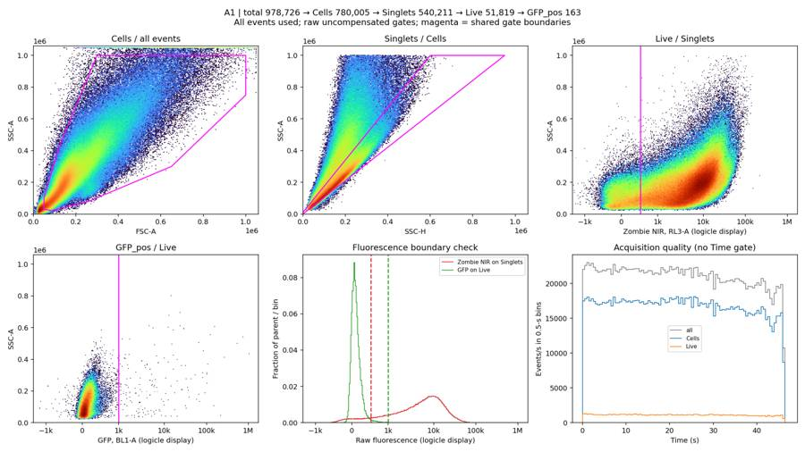
tool call · exec
for(const path of ["/task/outputs/plots/gating_B1.png","/task/outputs/plots/gating_C1.png","/task/outputs/plots/gating_D5.png"])image((await tools.view_image({path})).image_url);
text(await tools.exec_command({cmd:"python - <<'PY'\nimport pandas as pd\ns=pd.read_csv('/task/outputs/diagnostics/survey_summary.csv');print(s.loc[s.time_backwards>0,['well','time_backwards','time_min','time_max']].to_string(index=False))\np=pd.read_csv('/task/outputs/diagnostics/gated_summary.csv');print(p[['well','total','Live','GFP_at_400','GFP_at_500','GFP_at_600','GFP_at_800','GFP_at_1000','GFP_at_1500']].to_string(index=False))\nPY","max_output_tokens":1500}));
tool output
Script completed Wall time 0.3 seconds Output:
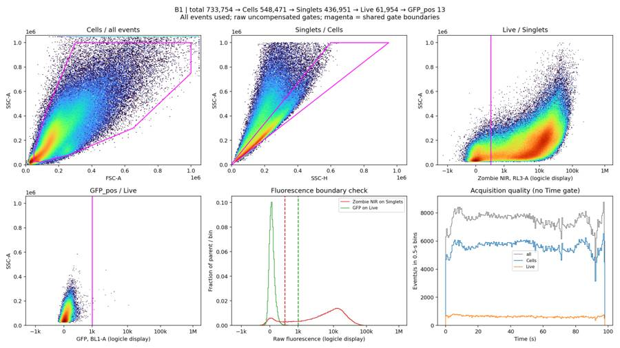
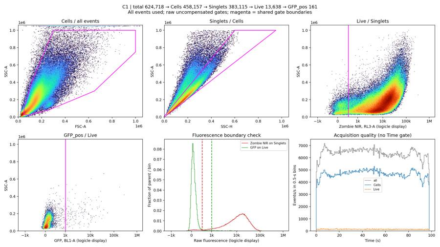
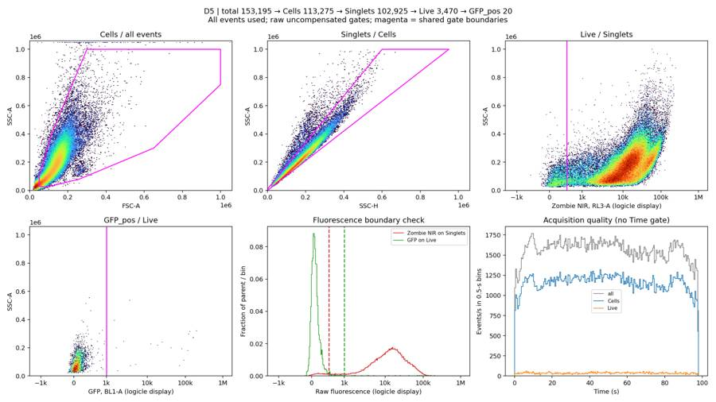
{"chunk_id":"cddc53","wall_time_seconds":0.045621315,"exit_code":0,"original_token_count":179,"output":"well time_backwards time_min time_max\n C6 1 0.014 97.567\n C11 1 0.014 97.535\n D4 1 0.014 97.528\nwell total Live GFP_at_400 GFP_at_500 GFP_at_600 GFP_at_800 GFP_at_1000 GFP_at_1500\n A1 978726 51819 844 549 370 230 163 133\n A2 935707 39777 636 430 345 264 234 193\n B1 733754 61954 153 67 41 18 13 9\n C1 624718 13638 306 254 221 182 161 126\n D5 153195 3470 56 36 33 24 20 19\n"}tool call · exec
text(await tools.apply_patch("*** Begin Patch\n*** Update File: /task/outputs/analyze_plate.py\n@@\n-GFP_MIN=1000.0\n+GFP_MIN=600.0\n*** End Patch"));
text(await tools.exec_command({cmd:"python /task/outputs/analyze_plate.py > /task/outputs/diagnostics/gating.log 2>&1","yield_time_ms":1000,"max_output_tokens":1000}));
text(await tools.exec_command({cmd:"python - <<'PY'\nimport flowkit as fk,numpy as np\nfor well in ['C6','C11','D4']:\n s=fk.Sample(f'/task/inputs/raw/Serotype panel_2_Rep2_Group_{well}.fcs');x=s.get_events(source='raw');t=x[:,0];idx=np.where(np.diff(t)<0)[0]\n for i in idx:\n print(well,'event',i,'time window',t[max(0,i-4):i+6].tolist(),'delta',t[i+1]-t[i])\n print('raw records (Time FSC SSC GFP NIR)',x[i:i+2,:5].tolist())\nPY","yield_time_ms":1000,"max_output_tokens":3000}));
tool output
Script completed
Wall time 2.2 seconds
Output:
{}
{"chunk_id":"5d3644","wall_time_seconds":1.00121322,"session_id":40153,"original_token_count":0,"output":""}
{"chunk_id":"bcaccd","wall_time_seconds":0.902133584,"exit_code":0,"original_token_count":201,"output":"C6 event 4442 time window [3.894, 3.894, 3.894, 3.894, 3.894, 0.014, 0.014, 0.014, 0.014, 0.014] delta -3.8800000000000003\nraw records (Time FSC SSC GFP NIR) [[3.894, 87897.0, 112718.0, 37.0, 5539.0], [0.014, 142007.0, 187028.0, 103.0, 14595.0]]\nC11 event 4102 time window [3.896, 3.896, 3.896, 3.896, 3.896, 0.014, 0.014, 0.014, 0.014, 0.014] delta -3.882\nraw records (Time FSC SSC GFP NIR) [[3.896, 138999.0, 168802.0, 54.0, 8452.0], [0.014, 40904.0, 37671.0, 58.0, 2795.0]]\nD4 event 4083 time window [3.8360000000000003, 3.8360000000000003, 3.8360000000000003, 3.8360000000000003, 3.8360000000000003, 0.014, 0.014, 0.014, 0.014, 0.015] delta -3.8220000000000005\nraw records (Time FSC SSC GFP NIR) [[3.8360000000000003, 324074.0, 557462.0, 1111.0, 16298.0], [0.014, 100237.0, 88112.0, -32.0, 1497.0]]\n"}tool call · exec
text(await tools.clock__curr_time({}));
text(await tools.exec_command({cmd:"tail -7 /task/outputs/diagnostics/gating.log && python - <<'PY'\nimport numpy as np,pandas as pd\ns=pd.read_csv('/task/outputs/diagnostics/survey_summary.csv')\nfor w in ['A1','B7','B8','C3','C6','C11','D4','D5']:\n d=np.load('/task/outputs/diagnostics/'+w+'_survey.npz');t=d['time_edges'];r=d['time_rate'];base=np.median(r[(t[:-1]>=10)&(t[1:]<=80)])\n print(w,'base',base,'first bins',r[:20].astype(int).tolist(),'last bins',r[-20:].astype(int).tolist(),'below20%',[(float(t[i]),int(r[i])) for i in np.where((r<.2*base)&(t[1:]<=s.set_index('well').loc[w,'time_max']))[0]])\nPY","max_output_tokens":3000}));
tool output
Script completed
Wall time 0.2 seconds
Output:
{"current_time":"2026-11-10 17:14:48 UTC"}
{"chunk_id":"14b4ff","wall_time_seconds":0.042935013,"exit_code":0,"original_token_count":742,"output":"A7 [848859, 668269, 528851, 48298, 256] Live% 9.13 GFP% 0.53\nA8 [710140, 563457, 459461, 34511, 310] Live% 7.51 GFP% 0.9\nA9 [958681, 737542, 562754, 60291, 211] Live% 10.71 GFP% 0.35\nA10 [870505, 683249, 536463, 46794, 251] Live% 8.72 GFP% 0.54\nA11 [844586, 646921, 516813, 47112, 411] Live% 9.12 GFP% 0.87\nA12 [947510, 727152, 570116, 45855, 632] Live% 8.04 GFP% 1.38\nB1 [733754, 548471, 436951, 61954, 41] Live% 14.18 GFP% 0.07\nA1 base 21165.0 first bins [22034, 22580, 23012, 22590, 22928, 22348, 21878, 21612, 21708, 21946, 21806, 22106, 22080, 21324, 22752, 21810, 21592, 22046, 22412, 22236] last bins [20040, 19176, 19622, 19540, 19364, 19772, 20142, 19754, 20720, 20350, 18752, 19126, 17848, 16978, 18616, 19622, 19374, 19888, 10748, 0] below20% []\nB7 base 10475.0 first bins [430, 194, 868, 2700, 2008, 1556, 1328, 2314, 5056, 5978, 6224, 6938, 6002, 3832, 7178, 6466, 7572, 9616, 8698, 10418] last bins [9506, 9590, 8914, 9118, 8828, 9068, 8586, 9450, 8588, 8786, 8818, 8528, 8758, 8700, 8680, 8404, 9250, 10702, 9254, 6342] below20% [(0.0, 430), (0.5, 194), (1.0, 868), (2.0, 2008), (2.5, 1556), (3.0, 1328), (61.5, 560)]\nB8 base 10015.0 first bins [944, 348, 132, 52, 36, 32, 72, 4332, 7192, 5332, 5722, 6480, 5264, 6022, 4928, 7088, 9180, 14556, 15272, 15116] last bins [9136, 8982, 9066, 9262, 9520, 9642, 9706, 9604, 9582, 10912, 8920, 8232, 7572, 7262, 6814, 6282, 6400, 5958, 5242, 2576] below20% [(0.0, 944), (0.5, 348), (1.0, 132), (1.5, 52), (2.0, 36), (2.5, 32), (3.0, 72)]\nC3 base 6986.0 first bins [5928, 6428, 6162, 5924, 6090, 6424, 6630, 7012, 6982, 7172, 7338, 7362, 7492, 7778, 7558, 7620, 7790, 7482, 7528, 7222] last bins [6714, 6862, 7310, 7778, 5838, 7438, 6776, 5796, 5380, 5112, 4804, 4642, 4274, 3926, 4062, 3242, 2944, 2428, 2262, 482] below20% []\nC6 base 9343.0 first bins [8890, 8972, 8232, 8366, 9052, 8952, 11740, 16296, 9886, 9944, 9930, 10090, 9876, 10108, 9952, 10086, 10122, 10010, 9886, 9362] last bins [8552, 8430, 9186, 8448, 8834, 8696, 10782, 10978, 8506, 7538, 7282, 6724, 6626, 6140, 6130, 6318, 5398, 4500, 4318, 578] below20% []\nC11 base 9036.0 first bins [7818, 8192, 7668, 7742, 8034, 8506, 11004, 14968, 9400, 9416, 9488, 9678, 9750, 9988, 9910, 10030, 9668, 9846, 9584, 9492] last bins [9346, 9360, 9334, 9190, 9008, 8882, 9048, 8762, 9056, 8686, 7908, 7816, 7636, 7704, 7942, 7482, 7640, 7624, 8150, 616] below20% []\nD4 base 9599.0 first bins [8020, 8556, 7820, 7780, 8226, 8772, 12320, 14474, 9742, 9932, 10116, 10410, 10374, 10452, 10394, 10234, 10208, 10170, 10054, 10058] last bins [9822, 9950, 9790, 9298, 9080, 8912, 9634, 9216, 9168, 8506, 8666, 8012, 8842, 8286, 7982, 8196, 8726, 8812, 8176, 490] below20% []\nD5 base 1600.0 first bins [1096, 1328, 1218, 1154, 1184, 1302, 1328, 1466, 1454, 1506, 1530, 1620, 1600, 1592, 1636, 1672, 1714, 1732, 1766, 1768] last bins [1588, 1618, 1644, 1594, 1474, 1488, 1506, 1428, 1496, 1456, 1366, 1304, 1392, 1400, 1288, 1198, 1448, 1340, 1310, 810] below20% []\n"}21
agent
The first saved gates are in place, and their XML reload gives identical event memberships. I also found brief startup Time resets in C6, C11, and D4. I’m inspecting those separately because overlapping timestamps can create apparent rate spikes. The GFP boundary is being checked against the least-bright sample wells.
tool call · exec
text(await tools.exec_command({cmd:"tail -7 /task/outputs/diagnostics/gating.log && python - <<'PY'\nimport pandas as pd,numpy as np\nfrom scipy.ndimage import gaussian_filter1d\nimport flowkit as fk\ns=pd.read_csv('/task/outputs/diagnostics/gated_summary.csv')\ntx=fk.transforms.LogicleTransform(1048576,.5,4.5,0)\nrows=[]\nfor w in s.well:\n d=np.load('/task/outputs/diagnostics/'+w+'_gated.npz');h=gaussian_filter1d(d['rl_hist'].astype(float),2);z=(d['fl_edges'][:-1]+d['fl_edges'][1:])/2\n inds=np.where((z>.17)&(z<.38))[0];i=inds[np.argmin(h[inds])]\n rows.append({'well':w,'RL3_valley_raw':round(tx.inverse(np.array([z[i]]))[0],1),'valley_logicle':round(z[i],3)})\nprint(pd.DataFrame(rows).to_string(index=False))\nprint(s[['well','total','Cells','Singlets','Live','GFP_pos']].to_string(index=False))\nPY","max_output_tokens":4000}));
tool output
Script completed
Wall time 0.8 seconds
Output:
{"chunk_id":"e63352","wall_time_seconds":0.679316272,"exit_code":0,"original_token_count":948,"output":"C9 [801299, 606093, 485245, 30220, 514] Live% 6.23 GFP% 1.7\nC10 [927162, 705798, 555598, 31432, 434] Live% 5.66 GFP% 1.38\nC11 [868685, 660553, 526045, 28502, 310] Live% 5.42 GFP% 1.09\nC12 [578214, 437075, 368261, 17426, 167] Live% 4.73 GFP% 0.96\nD1 [800840, 605246, 486842, 30861, 140] Live% 6.34 GFP% 0.45\nD2 [894591, 681549, 542435, 32235, 307] Live% 5.94 GFP% 0.95\nD3 [915097, 696885, 546024, 47619, 169] Live% 8.72 GFP% 0.35\nwell RL3_valley_raw valley_logicle\n A1 224.3 0.172\n A2 340.2 0.200\n A3 272.4 0.184\n A4 305.7 0.192\n A5 305.7 0.192\n A6 340.2 0.200\n A7 322.8 0.196\n A8 357.9 0.204\n A9 376.0 0.208\n A10 357.9 0.204\n A11 256.2 0.180\n A12 224.3 0.172\n B1 394.5 0.212\n B2 394.5 0.212\n B3 340.2 0.200\n B4 394.5 0.212\n B5 376.0 0.208\n B6 224.3 0.172\n B7 240.2 0.176\n B8 240.2 0.176\n B9 272.4 0.184\n B10 224.3 0.172\n B11 256.2 0.180\n B12 256.2 0.180\n C1 376.0 0.208\n C2 322.8 0.196\n C3 376.0 0.208\n C4 340.2 0.200\n C5 340.2 0.200\n C6 240.2 0.176\n C7 357.9 0.204\n C8 357.9 0.204\n C9 322.8 0.196\n C10 305.7 0.192\n C11 322.8 0.196\n C12 376.0 0.208\n D1 256.2 0.180\n D2 256.2 0.180\n D3 256.2 0.180\n D4 272.4 0.184\nwell total Cells Singlets Live GFP_pos\n A1 978726 780005 540211 51819 370\n A2 935707 734251 579172 39777 345\n A3 925910 734072 579129 40874 508\n A4 892332 713598 563582 38858 478\n A5 986514 777501 605015 42187 600\n A6 755396 602151 491020 28416 538\n A7 848859 668269 528851 48298 256\n A8 710140 563457 459461 34511 310\n A9 958681 737542 562754 60291 211\n A10 870505 683249 536463 46794 251\n A11 844586 646921 516813 47112 411\n A12 947510 727152 570116 45855 632\n B1 733754 548471 436951 61954 41\n B2 728886 540613 428936 55183 87\n B3 667298 495441 402404 34954 255\n B4 598212 440225 362601 35062 138\n B5 837561 634236 504843 53567 334\n B6 877336 656784 518367 59610 365\n B7 954909 725857 564641 26871 274\n B8 918778 696300 547404 29078 444\n B9 862070 664801 528674 30233 428\n B10 1083648 823826 634217 32914 537\n B11 988574 747313 584265 30631 787\n B12 904103 677881 536901 26298 881\n C1 624718 458157 383115 13638 221\n C2 695572 508236 416675 19712 370\n C3 656321 478953 390682 30833 199\n C4 679504 504544 416301 20401 264\n C5 689593 511120 422118 18025 238\n C6 891011 659675 524443 21997 272\n C7 649735 466900 383119 20823 255\n C8 639518 466031 385641 21149 688\n C9 801299 606093 485245 30220 514\n C10 927162 705798 555598 31432 434\n C11 868685 660553 526045 28502 310\n C12 578214 437075 368261 17426 167\n D1 800840 605246 486842 30861 140\n D2 894591 681549 542435 32235 307\n D3 915097 696885 546024 47619 169\n D4 925805 712266 561775 34783 202\n"}tool call · exec
text(await tools.exec_command({cmd:"tail -5 /task/outputs/diagnostics/gating.log && python - <<'PY'\nimport pandas as pd,numpy as np,flowkit as fk\nfrom pathlib import Path\ns=pd.read_csv('/task/outputs/diagnostics/gated_summary.csv');s['bright_pct']=100*s.GFP_at_2000/s.Live\nprint(s[['well','Live','GFP_at_400','GFP_at_500','GFP_at_600','GFP_at_800','GFP_at_1000','bright_pct']].sort_values('bright_pct').head(12).to_string(index=False))\nprint('Time reset diagnostics:')\nfor well in ['C6','C11','D4']:\n sm=fk.Sample(f'/task/inputs/raw/Serotype panel_2_Rep2_Group_{well}.fcs');x=sm.get_events(source='raw');t=x[:,0];i=np.where(np.diff(t)<0)[0][0]+1\n print(well,'startup',i,'pct',100*i/len(t),'time',t[0],t[i-1],'last repeated time count',np.sum(t[:i]==t[i-1]),'first segment quantiles',np.quantile(t[:i],[0,.25,.5,.75,1]))\n print('main sec 0-5',np.histogram(t[i:],np.arange(0,6))[0].tolist())\nPY","yield_time_ms":1000,"max_output_tokens":2500}));
tool output
Script completed
Wall time 1.0 seconds
Output:
{"chunk_id":"4271f9","wall_time_seconds":0.844243039,"exit_code":0,"original_token_count":499,"output":"D2 [894591, 681549, 542435, 32235, 307] Live% 5.94 GFP% 0.95\nD3 [915097, 696885, 546024, 47619, 169] Live% 8.72 GFP% 0.35\nD4 [925805, 712266, 561775, 34783, 202] Live% 6.19 GFP% 0.58\nD5 [153195, 113275, 102925, 3470, 33] Live% 3.37 GFP% 0.95\nD6 [726651, 546804, 448654, 13146, 116] Live% 2.93 GFP% 0.88\nwell Live GFP_at_400 GFP_at_500 GFP_at_600 GFP_at_800 GFP_at_1000 bright_pct\n B1 61954 153 67 41 18 13 0.012913\n B2 55183 238 125 87 64 50 0.041680\n B4 35062 358 211 138 88 69 0.096971\n B6 59610 800 493 365 225 183 0.171112\n A9 60291 442 284 211 160 142 0.185766\n D1 30861 297 186 140 87 78 0.187939\n B5 53567 775 466 334 230 181 0.196016\n D3 47619 365 224 169 135 121 0.205800\n A1 51819 844 549 370 230 163 0.229645\n A7 48298 429 313 256 212 183 0.287797\n D6 13146 278 158 116 80 61 0.296668\n D4 34783 377 268 202 164 145 0.310497\nTime reset diagnostics:\nC6 startup 4443 pct 0.4986470425168713 time 3.35 3.894 last repeated time count 10 first segment quantiles [3.35 3.493 3.632 3.768 3.894]\nmain sec 0-5 [8931, 8299, 9002, 9575, 9922]\nC11 startup 4103 pct 0.47232310906715325 time 3.345 3.896 last repeated time count 6 first segment quantiles [3.345 3.487 3.622 3.758 3.896]\nmain sec 0-5 [8005, 7705, 8270, 8883, 9416]\nD4 startup 4084 pct 0.4411296115272655 time 3.2920000000000003 3.8360000000000003 last repeated time count 5 first segment quantiles [3.292 3.428 3.564 3.701 3.836]\nmain sec 0-5 [8288, 7800, 8499, 9313, 9848]\n"}tool call · exec
text(await tools.exec_command({cmd:"python - <<'PY'\nimport flowkit as fk,numpy as np\nfor w in ['C6','C11','D4']:\n s=fk.Sample('/task/inputs/raw/Serotype panel_2_Rep2_Group_'+w+'.fcs');e=s.get_events(source='raw');i=np.where(np.diff(e[:,0])<0)[0][0]+1\n match=0\n for j in range(0,i,max(i//100,1)):\n cand=np.where((e[i:,0]==e[j,0])&(e[i:,1]==e[j,1])&(e[i:,2]==e[j,2]))[0]\n match+=int(len(cand)>0)\n print(w,'prefix fingerprints duplicated later',match,'tested',len(range(0,i,max(i//100,1))))\nPY","yield_time_ms":1000,"max_output_tokens":1200}));
tool output
Script completed
Wall time 1.2 seconds
Output:
{"chunk_id":"c23daf","wall_time_seconds":1.0015988,"session_id":52383,"original_token_count":0,"output":""}tool call · exec
text(await tools.exec_command({cmd:"python - <<'PY'\nimport flowkit as fk,numpy as np\nfor w in ['C6','C11','D4']:\n s=fk.Sample('/task/inputs/raw/Serotype panel_2_Rep2_Group_'+w+'.fcs');e=s.get_events(source='raw');i=np.where(np.diff(e[:,0])<0)[0][0]+1\n records=np.ascontiguousarray(e).view(np.dtype((np.void,e.dtype.itemsize*e.shape[1]))).ravel()\n same=np.isin(records[:i],records[i:],assume_unique=False)\n print(w,'all prefix records duplicated later',int(same.sum()),'of',i,flush=True)\nPY","yield_time_ms":1000,"max_output_tokens":1000}));
text(await tools.exec_command({cmd:"python - <<'PY'\nimport pandas as pd\np=pd.read_csv('/task/outputs/diagnostics/gated_summary.csv')\nprint(len(p),'wells; total',p.total.sum(),'Cells',p.Cells.sum(),'Singlets',p.Singlets.sum(),'Live',p.Live.sum(),'GFP_pos',p.GFP_pos.sum())\nprint('Max remaining fluorescence saturation',p.filter(regex='(Live|GFP_pos)_(RL3|BL1)-A_sat_pct').max().to_dict())\nPY","max_output_tokens":1000}));
tool output
Script completed
Wall time 1.4 seconds
Output:
{"chunk_id":"d8ab48","wall_time_seconds":1.00050164,"session_id":54494,"original_token_count":25,"output":"C6 all prefix records duplicated later 0 of 4443\nC11 all prefix records duplicated later 0 of 4103\n"}
{"chunk_id":"fe153f","wall_time_seconds":0.060728217,"exit_code":0,"original_token_count":67,"output":"42 wells; total 33927506 Cells 25839076 Singlets 20528689 Live 1437419 GFP_pos 14380\nMax remaining fluorescence saturation {'Live_RL3-A_sat_pct': 0.0, 'Live_BL1-A_sat_pct': 0.049268018018018, 'GFP_pos_RL3-A_sat_pct': 0.0, 'GFP_pos_BL1-A_sat_pct': 3.40632603406326}\n"}tool call · exec
text(await tools.apply_patch("*** Begin Patch\n*** Add File: /task/outputs/review_plots.py\n+\"\"\"Plot full-event cached histograms for shared-boundary review.\"\"\"\n+import numpy as np\n+import pandas as pd\n+import matplotlib\n+matplotlib.use('Agg')\n+import matplotlib.pyplot as plt\n+from matplotlib.colors import LogNorm\n+from scipy.ndimage import gaussian_filter1d\n+from analyze_plate import OUT,LAYOUT,DISPLAY_TX,FL_EDGES,SC_EDGES,LIVE_MAX,GFP_MIN,CELLS,SINGLETS,outline,fluorescence_axis\n+\n+def main():\n+ for key,title,xlab in [('cells','Cells / all events','FSC-A'),('singlets','Singlets / Cells','SSC-H'),\n+ ('live','Live / Singlets','RL3-A (logicle; raw-unit ticks)'),('gfp','GFP_pos / Live','BL1-A (logicle; raw-unit ticks)')]:\n+ for page,part in enumerate([LAYOUT.iloc[:24],LAYOUT.iloc[24:]],1):\n+ fig,axes=plt.subplots(4,6,figsize=(18,12))\n+ for ax,rec in zip(axes.flat,part.itertuples(index=False)):\n+ d=np.load(OUT/'diagnostics'/f'{rec.well}_gated.npz')\n+ xe=FL_EDGES if key in ['live','gfp'] else SC_EDGES\n+ ax.pcolormesh(xe,SC_EDGES,np.ma.masked_equal(d[key].T,0),norm=LogNorm(vmin=1),cmap='turbo',rasterized=True)\n+ if key=='cells':outline(ax,CELLS)\n+ elif key=='singlets':outline(ax,SINGLETS)\n+ else:\n+ fluorescence_axis(ax)\n+ ax.axvline(DISPLAY_TX.apply(np.array([LIVE_MAX if key=='live' else GFP_MIN]))[0],color='magenta',lw=1.2)\n+ ax.set_ylim(0,500000)\n+ ax.set_title(rec.well,fontsize=11);ax.tick_params(labelsize=7)\n+ for ax in list(axes.flat)[len(part):]:ax.axis('off')\n+ fig.supxlabel(xlab);fig.supylabel('SSC-A');fig.suptitle(f'{title}: shared magenta gate, all parent events; page {page}')\n+ fig.tight_layout();fig.savefig(OUT/'plots'/f'final_{key}_{page}.png',dpi=150);plt.close(fig)\n+ # The wells with the lowest fraction above 2,000 raw GFP units were B1 and B2.\n+ refs=['B1','B2','B4','A2','C3','C12']\n+ fig,axes=plt.subplots(2,3,figsize=(16,9))\n+ centers=(FL_EDGES[:-1]+FL_EDGES[1:])/2\n+ for ax in axes.flat:fluorescence_axis(ax)\n+ for w in refs:\n+ d=np.load(OUT/'diagnostics'/f'{w}_gated.npz')\n+ h=d['rl_hist']/d['rl_hist'].sum()\n+ axes[0,0].plot(centers,gaussian_filter1d(h,1.5),label=w,lw=1.1)\n+ axes[0,0].axvline(DISPLAY_TX.apply(np.array([LIVE_MAX]))[0],color='magenta',ls='--');axes[0,0].legend(ncol=2,fontsize=8)\n+ axes[0,0].set(title='Live boundary: Singlets histograms',ylabel='Fraction / logicle bin',ylim=(0,.022))\n+ for ax,w in zip(axes[0,1:],['B1','B2']):\n+ d=np.load(OUT/'diagnostics'/f'{w}_gated.npz')\n+ ax.pcolormesh(FL_EDGES,SC_EDGES,np.ma.masked_equal(d['live'].T,0),norm=LogNorm(),cmap='turbo')\n+ ax.axvline(DISPLAY_TX.apply(np.array([LIVE_MAX]))[0],color='magenta');ax.set(title=f'{w}: RL3-A vs SSC-A on Singlets',ylim=(0,350000),ylabel='SSC-A')\n+ for w in ['B1','B2','B4']:\n+ d=np.load(OUT/'diagnostics'/f'{w}_gated.npz');h=d['bl_hist']/d['bl_hist'].sum()\n+ axes[1,0].stairs(h,FL_EDGES,label=w)\n+ axes[1,0].axvline(DISPLAY_TX.apply(np.array([GFP_MIN]))[0],color='magenta',ls='--');axes[1,0].legend(fontsize=8)\n+ axes[1,0].set(yscale='log',ylim=(1e-5,.2),title='GFP boundary: weakest-bright Live samples',ylabel='Fraction / logicle bin')\n+ for ax,w in zip(axes[1,1:],['B1','B2']):\n+ d=np.load(OUT/'diagnostics'/f'{w}_gated.npz')\n+ ax.pcolormesh(FL_EDGES,SC_EDGES,np.ma.masked_equal(d['gfp'].T,0),norm=LogNorm(),cmap='turbo')\n+ ax.axvline(DISPLAY_TX.apply(np.array([GFP_MIN]))[0],color='magenta');ax.set(title=f'{w}: BL1-A vs SSC-A on Live',ylim=(0,350000),ylabel='SSC-A')\n+ for ax in axes.flat:\n+ vals=np.array([-400,0,200,400,600,1000,3000,10000,100000],dtype=float)\n+ ax.set_xticks(DISPLAY_TX.apply(vals),['−400','0','200','400','600','1k','3k','10k','100k'],rotation=45)\n+ ax.set_xlim(-.02,.8);ax.set_xlabel('Raw fluorescence; logicle display')\n+ fig.suptitle('Empirical fluorescence boundaries: RL3-A < 400; BL1-A ≥ 600\\nAll references are transduced samples; no control wells. Histograms use every parent event.',fontsize=13)\n+ fig.tight_layout();fig.savefig(OUT/'plots/fluorescence_boundaries.png',dpi=170);plt.close(fig)\n+\n+if __name__=='__main__':main()\n*** End Patch"));
text(await tools.exec_command({cmd:"python /task/outputs/review_plots.py > /task/outputs/diagnostics/review_plots.log 2>&1","yield_time_ms":1000,"max_output_tokens":1000}));
text(await tools.write_stdin({session_id:54494,chars:"","yield_time_ms":1000,"max_output_tokens":1000}));
tool output
Script completed
Wall time 1.2 seconds
Output:
{}
{"chunk_id":"f2ccdd","wall_time_seconds":1.00109429,"session_id":96395,"original_token_count":0,"output":""}
{"chunk_id":"537c2b","wall_time_seconds":0.0000034,"exit_code":0,"original_token_count":13,"output":"D4 all prefix records duplicated later 0 of 4084\n"}26
agent
The shared boundaries are now RL3-A < 400 for Live and BL1-A ≥ 600 for GFP_pos. B1 and B2 provide the clearest weak-GFP references, with B4 supporting the choice. All 42 wells have been gated, and the reloaded XML reproduces every membership exactly. I’m finishing the QC evidence and exclusion table.
tool call · exec
text(await tools.apply_patch("*** Begin Patch\n*** Add File: /task/outputs/quality_control.py\n+\"\"\"Acquisition QC only: no additional event gate or event removal.\"\"\"\n+import json\n+from pathlib import Path\n+import numpy as np\n+import pandas as pd\n+import flowkit as fk\n+import matplotlib\n+matplotlib.use('Agg')\n+import matplotlib.pyplot as plt\n+from analyze_plate import ROOT,OUT,LAYOUT,POPS\n+\n+def intervals(mask,edges):\n+ starts=np.flatnonzero(np.diff(np.r_[False,mask,False].astype(int))==1)\n+ ends=np.flatnonzero(np.diff(np.r_[False,mask,False].astype(int))==-1)\n+ return [(float(edges[a]),float(edges[b])) for a,b in zip(starts,ends)]\n+\n+def main():\n+ survey=pd.read_csv(OUT/'diagnostics/survey_summary.csv').set_index('well')\n+ gated=pd.read_csv(OUT/'diagnostics/gated_summary.csv').set_index('well')\n+ metrics=[];flags=[];plots={};reset_details=[]\n+ for rec in LAYOUT.itertuples(index=False):\n+ sr=survey.loc[rec.well];gr=gated.loc[rec.well]\n+ d=np.load(OUT/'diagnostics'/f'{rec.well}_survey.npz')\n+ te=d['time_edges'];rate=d['time_rate'];reset_n=0;reset_delta=0.;prefix_n=0\n+ prefix_duration=0.;main_n=int(sr.total);main_start=float(sr.time_min);main_end=float(sr.time_max)\n+ if sr.time_backwards:\n+ s=fk.Sample(str(ROOT/'inputs/raw'/rec.file));e=s.get_events(source='raw',subsample=False);t=e[:,s.get_channel_index('Time')]\n+ breaks=np.flatnonzero(np.diff(t)<0)+1\n+ assert len(breaks)==1\n+ split=int(breaks[0]);reset_n=len(breaks);reset_delta=float(t[split]-t[split-1]);prefix_n=split\n+ prefix_duration=float(t[split-1]-t[0]);main_t=t[split:];main_n=len(main_t);main_start=float(main_t[0]);main_end=float(main_t[-1])\n+ rate=np.histogram(main_t,bins=te)[0]/.5\n+ prefix_rate=np.histogram(t[:split],bins=te)[0]/.5\n+ reset_details.append(dict(well=rec.well,prefix_events=split,prefix_first_s=float(t[0]),prefix_last_s=float(t[split-1]),main_first_s=main_start,reset_seconds=reset_delta,prefix_pct=100*split/len(t),main_events=main_n))\n+ plots[rec.well+'_prefix']=(te,prefix_rate)\n+ del s,e,t,main_t\n+ complete=(te[:-1]>=main_start)&(te[1:]<=main_end)\n+ middle=complete&(te[:-1]>=.2*main_end)&(te[1:]<=.8*main_end)\n+ baseline=float(np.median(rate[middle]))\n+ min_i=np.flatnonzero(complete)[np.argmin(rate[complete])]\n+ max_i=np.flatnonzero(complete)[np.argmax(rate[complete])]\n+ low=complete&(rate<.2*baseline)\n+ burst=complete&(rate>1.5*baseline)\n+ end_full=np.floor(main_end*2)/2\n+ terminal2=(te[:-1]>=end_full-2)&(te[1:]<=end_full)\n+ terminal5=(te[:-1]>=end_full-5)&(te[1:]<=end_full)\n+ terminal2rate=float(np.mean(rate[terminal2]));terminal5rate=float(np.mean(rate[terminal5]))\n+ row=dict(file=rec.file,well=rec.well,total=int(sr.total),main_segment_events=main_n,\n+ baseline_events_per_s=baseline,min_complete_events_per_s=float(rate[min_i]),min_rate_start_s=float(te[min_i]),\n+ peak_complete_events_per_s=float(rate[max_i]),peak_rate_start_s=float(te[max_i]),\n+ low_below_20pct_intervals_s=json.dumps(intervals(low,te)),\n+ burst_above_150pct_intervals_s=json.dumps(intervals(burst,te)),\n+ terminal2_start_s=end_full-2,terminal2_end_s=end_full,terminal2_events_per_s=terminal2rate,\n+ terminal5_events_per_s=terminal5rate,terminal5_ratio=terminal5rate/baseline,\n+ time_resets=reset_n,reset_delta_s=reset_delta,prefix_events=prefix_n,prefix_pct=100*prefix_n/sr.total,\n+ prefix_duration_s=prefix_duration,max_time_gap_s=float(sr.max_time_gap),\n+ fsc_scale_max_pct=float(sr['FSC-A_sat_pct']),ssc_scale_max_pct=float(sr['SSC-A_sat_pct']),\n+ raw_bl1_scale_max_pct=float(sr['BL1-A_sat_pct']),raw_rl3_scale_max_pct=float(sr['RL3-A_sat_pct']),\n+ live_bl1_scale_max_pct=float(gr['Live_BL1-A_sat_pct']),live_rl3_scale_max_pct=float(gr['Live_RL3-A_sat_pct']),\n+ **{p:int(gr[p]) for p in POPS})\n+ metrics.append(row);plots[rec.well]=(te,rate)\n+ base=(f'total={int(sr.total)}; Cells={int(gr.Cells)}; Singlets={int(gr.Singlets)}; '\n+ f'Live={int(gr.Live)}; GFP_pos={int(gr.GFP_pos)}; '\n+ f'median middle-run rate={baseline:.0f} events/s; '\n+ f'end rate ({end_full-2:.1f}-{end_full:.1f} s)={terminal2rate:.0f} events/s; '\n+ f'scale maximum (1048575): FSC-A={sr[\"FSC-A_sat_pct\"]:.3f}%, SSC-A={sr[\"SSC-A_sat_pct\"]:.3f}%, '\n+ f'Live BL1-A={gr[\"Live_BL1-A_sat_pct\"]:.4f}%')\n+ usable='yes';category='ok';extra=''\n+ if rec.well=='B7':\n+ usable='no';category='clog_or_interrupted_flow'\n+ extra=(f'; irregular startup 0-4 s; internal collapse {te[min_i]:.1f}-{te[min_i+1]:.1f} s '\n+ f'to {rate[min_i]:.0f} events/s ({100*rate[min_i]/baseline:.1f}% of baseline), '\n+ f'with repeated surges including {rate[max_i]:.0f} events/s at {te[max_i]:.1f}-{te[max_i+1]:.1f} s; confidence: high')\n+ elif rec.well=='B8':\n+ usable='no';category='clog_or_interrupted_flow'\n+ start=rate[te[:-1]<3.5]\n+ extra=(f'; 0-3.5 s near-stall: {start.min():.0f}-{start.max():.0f} events/s '\n+ f'(mean {start.mean():.0f}, {100*start.mean()/baseline:.1f}% of baseline), '\n+ f'followed by {rate[max_i]:.0f} events/s burst at {te[max_i]:.1f}-{te[max_i+1]:.1f} s; confidence: high')\n+ elif reset_n:\n+ extra=(f'; startup Time resets by {abs(reset_delta):.3f} s after {prefix_n} events '\n+ f'({100*prefix_n/sr.total:.3f}% of file); rate metrics use the subsequent {main_n}-event segment; '\n+ 'brief timestamp anomaly retained after r
… [3,849 more characters not shown]tool output
Script completed
Wall time 1.2 seconds
Output:
{}
{"chunk_id":"389ef1","wall_time_seconds":1.000790989,"session_id":36781,"original_token_count":0,"output":""}tool call · exec
text(await tools.apply_patch("*** Begin Patch\n*** Update File: /task/outputs/quality_control.py\n@@\n if rec.well=='B7':\n usable='no';category='clog_or_interrupted_flow'\n+ interior=np.flatnonzero(complete&(te[:-1]>=10)&(te[1:]<=80))\n+ stall_i=interior[np.argmin(rate[interior])]\n extra=(f'; irregular startup 0-4 s; internal collapse {te[min_i]:.1f}-{te[min_i+1]:.1f} s '\n- f'to {rate[min_i]:.0f} events/s ({100*rate[min_i]/baseline:.1f}% of baseline), '\n+ f'to {rate[stall_i]:.0f} events/s ({100*rate[stall_i]/baseline:.1f}% of baseline), '\n@@\n f'with repeated surges including {rate[max_i]:.0f} events/s at {te[max_i]:.1f}-{te[max_i+1]:.1f} s; confidence: high')\n*** End Patch"));
text(await tools.apply_patch("*** Begin Patch\n*** Update File: /task/outputs/quality_control.py\n@@\n- extra=(f'; irregular startup 0-4 s; internal collapse {te[min_i]:.1f}-{te[min_i+1]:.1f} s '\n+ extra=(f'; irregular startup 0-4 s; internal collapse {te[stall_i]:.1f}-{te[stall_i+1]:.1f} s '\n*** End Patch"));
text(await tools.exec_command({cmd:"tail -8 /task/outputs/diagnostics/qc.log && tail -3 /task/outputs/diagnostics/review_plots.log","max_output_tokens":1200}));
for (const path of ["/task/outputs/plots/fluorescence_boundaries.png","/task/outputs/plots/final_live_1.png","/task/outputs/plots/final_live_2.png"])image((await tools.view_image({path})).image_url);
tool output
Script completed Wall time 0.1 seconds Output:
{}{}{"chunk_id":"fefcf1","wall_time_seconds":0.00000349,"exit_code":0,"original_token_count":194,"output":" C11 9034.0 7482.0 95.5 7724.0\n C12 6029.0 4594.0 97.0 5313.0\n D1 8323.0 6904.0 96.5 7044.0\n D2 9340.0 6392.0 96.0 7485.5\n D3 9585.0 7538.0 95.0 8603.0\n D4 9664.0 7780.0 1.5 8477.5\n D5 1609.0 1154.0 1.5 1324.0\n D6 7615.0 6116.0 94.5 6759.0\n"}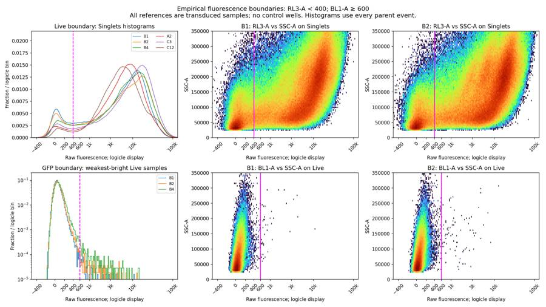
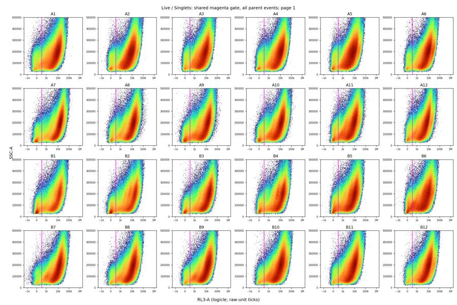
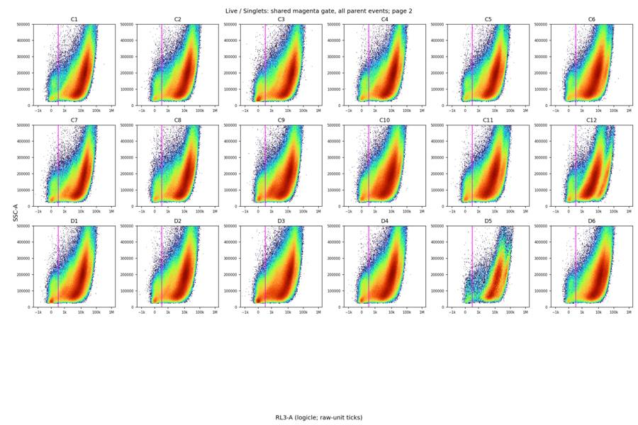
tool call · exec
for(const path of ["/task/outputs/plots/final_gfp_1.png","/task/outputs/plots/final_gfp_2.png","/task/outputs/plots/qc_excluded_wells.png","/task/outputs/plots/qc_time_resets.png"])image((await tools.view_image({path})).image_url);
text(await tools.exec_command({cmd:"python /task/outputs/quality_control.py > /task/outputs/diagnostics/qc.log 2>&1","yield_time_ms":1000,"max_output_tokens":1000}));
tool output
Script completed Wall time 1.2 seconds Output:
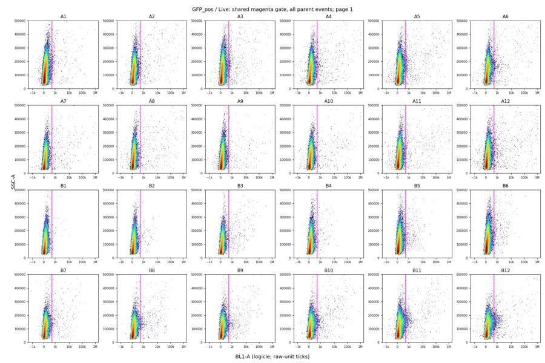
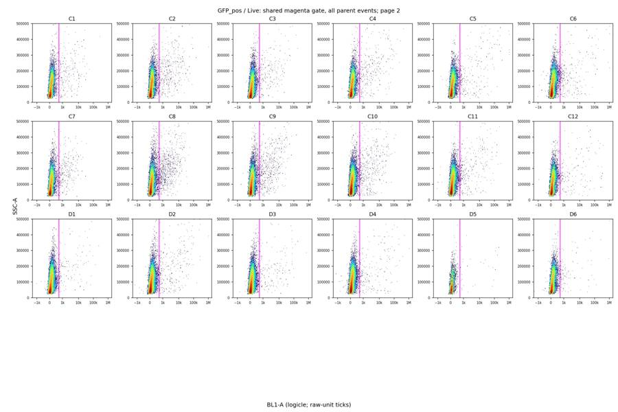
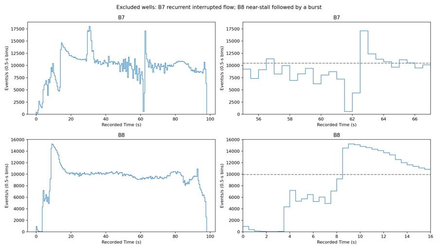
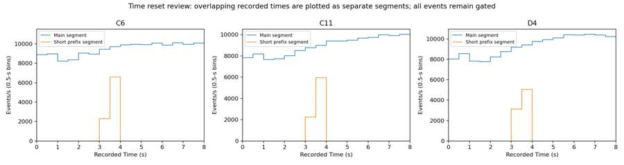
{"chunk_id":"8295e6","wall_time_seconds":1.00099062,"session_id":13587,"original_token_count":0,"output":""}tool call · exec
text(await tools.exec_command({cmd:"python - <<'PY'\nimport pandas as pd\nf=pd.read_csv('/task/outputs/flags.csv')\nfor r in f.loc[f.well.isin(['B7','B8','C6','C11','D4','D5'])].itertuples():print(r.well,r.usable,r.reason_category,r.evidence)\nPY","max_output_tokens":3000}));
text(await tools.exec_command({cmd:"head -30 /task/outputs/gates.xml && du -sh /task/outputs","max_output_tokens":2000}));
tool output
Script completed
Wall time 0.2 seconds
Output:
{"chunk_id":"03bac8","wall_time_seconds":0.043951114,"exit_code":0,"original_token_count":606,"output":"B7 no clog_or_interrupted_flow total=954909; Cells=725857; Singlets=564641; Live=26871; GFP_pos=274; median middle-run rate=10475 events/s; end rate (95.5-97.5 s)=9402 events/s; scale maximum (1048575): FSC-A=0.118%, SSC-A=0.561%, Live BL1-A=0.0000%; irregular startup 0-4 s; internal collapse 61.5-62.0 s to 560 events/s (5.3% of baseline), with repeated surges including 18016 events/s at 30.5-31.0 s; confidence: high\nB8 no clog_or_interrupted_flow total=918778; Cells=696300; Singlets=547404; Live=29078; GFP_pos=444; median middle-run rate=9954 events/s; end rate (95.5-97.5 s)=5970 events/s; scale maximum (1048575): FSC-A=0.042%, SSC-A=0.373%, Live BL1-A=0.0000%; 0-3.5 s near-stall: 32-944 events/s (mean 231, 2.3% of baseline), followed by 15272 events/s burst at 9.0-9.5 s; confidence: high\nC6 yes ok total=891011; Cells=659675; Singlets=524443; Live=21997; GFP_pos=272; median middle-run rate=9348 events/s; end rate (95.5-97.5 s)=5134 events/s; scale maximum (1048575): FSC-A=0.015%, SSC-A=0.314%, Live BL1-A=0.0182%; startup Time resets by 3.880 s after 4443 events (0.499% of file); rate metrics use the subsequent 886568-event segment; brief timestamp anomaly retained after review; all segments included in gate counts\nC11 yes ok total=868685; Cells=660553; Singlets=526045; Live=28502; GFP_pos=310; median middle-run rate=9034 events/s; end rate (95.5-97.5 s)=7724 events/s; scale maximum (1048575): FSC-A=0.038%, SSC-A=0.343%, Live BL1-A=0.0000%; startup Time resets by 3.882 s after 4103 events (0.472% of file); rate metrics use the subsequent 864582-event segment; brief timestamp anomaly retained after review; all segments included in gate counts\nD4 yes ok total=925805; Cells=712266; Singlets=561775; Live=34783; GFP_pos=202; median middle-run rate=9664 events/s; end rate (95.5-97.5 s)=8478 events/s; scale maximum (1048575): FSC-A=0.042%, SSC-A=0.427%, Live BL1-A=0.0057%; startup Time resets by 3.822 s after 4084 events (0.441% of file); rate metrics use the subsequent 921721-event segment; brief timestamp anomaly retained after review; all segments included in gate counts\nD5 yes ok total=153195; Cells=113275; Singlets=102925; Live=3470; GFP_pos=33; median middle-run rate=1609 events/s; end rate (95.5-97.5 s)=1324 events/s; scale maximum (1048575): FSC-A=0.002%, SSC-A=0.076%, Live BL1-A=0.0000%; lower yield but steady flow and 3470 Live events, above the 1000-Live-event QC review floor\n"}
{"chunk_id":"518f33","wall_time_seconds":0.00000437,"exit_code":0,"original_token_count":345,"output":"<?xml version='1.0' encoding='UTF-8'?>\n<gating:Gating-ML xmlns:gating=\"http://www.isac-net.org/std/Gating-ML/v2.0/gating\" xmlns:data-type=\"http://www.isac-net.org/std/Gating-ML/v2.0/datatypes\" xmlns:transforms=\"http://www.isac-net.org/std/Gating-ML/v2.0/transformations\">\n <gating:PolygonGate gating:id=\"Cells\">\n <gating:dimension gating:compensation-ref=\"uncompensated\">\n <data-type:fcs-dimension data-type:name=\"FSC-A\"/>\n </gating:dimension>\n <gating:dimension gating:compensation-ref=\"uncompensated\">\n <data-type:fcs-dimension data-type:name=\"SSC-A\"/>\n </gating:dimension>\n <gating:vertex>\n <gating:coordinate data-type:value=\"50000.0\"/>\n <gating:coordinate data-type:value=\"30000.0\"/>\n </gating:vertex>\n <gating:vertex>\n <gating:coordinate data-type:value=\"85000.0\"/>\n <gating:coordinate data-type:value=\"22000.0\"/>\n </gating:vertex>\n <gating:vertex>\n <gating:coordinate data-type:value=\"260000.0\"/>\n <gating:coordinate data-type:value=\"80000.0\"/>\n </gating:vertex>\n <gating:vertex>\n <gating:coordinate data-type:value=\"650000.0\"/>\n <gating:coordinate data-type:value=\"300000.0\"/>\n </gating:vertex>\n <gating:vertex>\n <gating:coordinate data-type:value=\"1000000.0\"/>\n <gating:coordinate data-type:value=\"750000.0\"/>\n </gating:vertex>\n <gating:vertex>\n44M\t/task/outputs\n"}tool call · exec
text(await tools.apply_patch("*** Begin Patch\n*** Add File: /task/outputs/notes.md\n+## Gates\n+\n+FlowKit 1.2.3 applied one shared tree, **Cells → Singlets → Live → GFP_pos**, to all 33,927,506 events in 42 files. Each population has exactly one gate; every dimension references the uncompensated detector ID. No compensation, calibration, autofluorescence correction, NCAM gate, Time gate, or subsampling was used.\n+\n+- **Cells:** FSC-A versus SSC-A polygon enclosing the main diagonal cell cloud, inspected across all wells. Its lower boundary excludes low-scatter debris (minimum FSC-A 50,000; minimum SSC-A 22,000); the upper edges stop at 1,000,000, below the 1,048,575 scale pile-up. Exact vertices are in `gates.xml` and `diagnostics/gate_parameters.json`.\n+- **Singlets:** SSC-H versus SSC-A polygon following the dense diagonal within Cells, approximately 1.053 × SSC-H ≤ SSC-A ≤ 1.65 × SSC-H + 10,000, capped at SSC-A 1,000,000. This rejects the excess-area aggregate plume above the ridge.\n+- **Live:** one-dimensional rectangle, **RL3-A < 400**, including negative values. Singlet histograms and RL3-A/SSC-A density plots from **B1, B2 and B4** show the dim/bright valley near 400; **A2, C3 and C12** support the shared broad trough. Checked across all wells in `plots/final_live_*.png`.\n+- **GFP_pos:** one-dimensional rectangle, **BL1-A ≥ 600**. **B1 and B2** had the smallest GFP-bright fractions on Live; their dense negative cloud ends around 400–500. **B4** provided a further check. The boundary lies just beyond that cloud; see `plots/fluorescence_boundaries.png` and `plots/final_gfp_*.png`.\n+\n+Fluorescence plots use logicle display (T=1,048,576, W=0.5, M=4.5, A=0); saved gates use raw-unit bounds. Both fluorescence boundaries are empirical: the transduced reference wells are not controls, and specificity cannot be established without controls.\n+\n+## Quality control\n+\n+Screened every well for identity/label/voltage consistency, scatter morphology, counts, saturation, timestamp continuity and 0.5-s event rates. Rate review used stalls below 20% and surges above 150% of the median middle-run rate (20–80% of recorded duration), plus terminal rates. Partial endpoint bins were excluded from rate metrics only. A 1,000-Live-event review floor was used; few GFP-positive events alone did not cause exclusion.\n+\n+**Exclude B7 and B8**, both `clog_or_interrupted_flow`, high confidence. B7 falls to **560 events/s at 61.5–62.0 s**, versus 10,475 baseline, with repeated bursts reaching 18,016. B8 averages **231 events/s during 0–3.5 s**, versus 9,954 baseline, then bursts to 15,272 at 9.0–9.5 s. See `plots/qc_excluded_wells.png`.\n+\n+The other 40 wells pass this technical screen. D5 retains 3,470 Live events with steady flow. A1's shorter, faster acquisition remains stable. C6, C11 and D4 have brief startup Time resets involving 0.44–0.50% of events; separate segment plots show stable main acquisitions, so they were retained with this anomaly documented. No sustained terminal near-stall or consequential fluorescence clipping was found; Live BL1-A clipping is at most 0.0493%.\n+\n+Counts include all events in all wells, including excluded wells and startup segments. Reloading `gates.xml` reproduces every gate membership. `counts.csv` has 168 rows; `flags.csv` has 42 rows with numerical evidence.\n+\n+## Deviations\n+\n+None.\n*** Add File: /task/outputs/validate_outputs.py\n+\"\"\"Verify deliverable schemas and independently recount the saved Gating-ML.\"\"\"\n+import hashlib\n+import json\n+import re\n+from pathlib import Path\n+import numpy as np\n+import pandas as pd\n+import flowkit as fk\n+from lxml import etree\n+\n+ROOT=Path('/task');OUT=ROOT/'outputs'\n+layout=pd.read_csv(ROOT/'inputs/plate_layout.csv')\n+counts=pd.read_csv(OUT/'counts.csv')\n+flags=pd.read_csv(OUT/'flags.csv')\n+populations=['Cells','Singlets','Live','GFP_pos']\n+parents=['all_events','Cells','Singlets','Live']\n+assert list(counts)==['file','well','population','count','parent_population','pct_of_parent']\n+assert list(flags)==['file','well','usable','reason_category','evidence']\n+assert len(counts)==168 and len(flags)==42\n+assert not counts.duplicated(['file','population']).any()\n+assert flags[['file','well']].equals(layout[['file','well']])\n+assert counts[['file','well']].reset_index(drop=True).equals(layout.loc[layout.index.repeat(4),['file','well']].reset_index(drop=True))\n+assert counts.population.tolist()==populations*42\n+assert counts.parent_population.tolist()==parents*42\n+assert np.issubdtype(counts['count'].dtype,np.integer)\n+assert counts.pct_of_parent.between(0,100).all()\n+assert not counts.isna().any().any() and not flags.isna().any().any()\n+allowed={'ok','clog_or_interrupted_flow','ran_dry','too_few_events','saturation','bad_control','mislabeled_or_unexpected','other'}\n+assert set(flags.usable)<= {'yes','no'} and set(flags.reason_category)<=allowed\n+assert ((flags.reason_category=='ok')==(flags.usable=='yes')).all()\n+assert flags.loc[flags.usable=='no','evidence'].str.contains(r'confidence: (?:high|medium|low)$',regex=True).all()\n+ns={'g':'http://www.isac-net.org/std/Gating-ML/v2.0/gating','d':'http://www.isac-net.org/std/Gating-ML/v2.0/datatypes'}\n+tree=etree.parse(str(OUT/'gates.xml'))\n+gates=list(tree.getroot())\n+assert len(gates)==4\n+assert [etree.QName(g).localname for g in gates]==['PolygonGate','PolygonGate','RectangleGate','RectangleGate']\n+assert [g.get('{'+ns['g']+'}id') for g in gates]==populations\n+assert [g.get('{'+ns['g']+'}parent_id') for g in gates]==[None,'Cells','Singlets','Live']\n+dimensions=tree.xpath('//g:dimension',namespaces=ns)\n+assert all(d.get('{'+ns['g']+'}compensation-ref')=='uncompensated' for d in dimensions)\n+assert tree.xpath('//d:fcs-dimension/@d:name',namespaces=ns)==['FSC-A','SSC-A','SSC-H','SSC-A','RL3-A','BL1-A']\n+strategy=fk.parse_gating_xml(str(OUT/'gates.xml'))\n+total=0;verified=[]\n+for rec in layout.itertuples(index=False):\n+ sample=f
… [1,985 more characters not shown]tool output
Script completed
Wall time 1.2 seconds
Output:
{}
{"chunk_id":"3d9344","wall_time_seconds":1.000541049,"session_id":63510,"original_token_count":0,"output":""}tool call · exec
text(await tools.exec_command({cmd:"wc -w /task/outputs/notes.md && tail -5 /task/outputs/diagnostics/validation.log && rg 'parent_id|parent-id|RectangleGate|dimension.*max|dimension.*min' /task/outputs/gates.xml","max_output_tokens":1500}));
text(await tools.clock__curr_time({}));
tool output
Script completed
Wall time 0.0 seconds
Output:
{"chunk_id":"1a411a","wall_time_seconds":0.00000361,"exit_code":0,"original_token_count":150,"output":"453 /task/outputs/notes.md\nC8 saved XML counts verified\nC9 saved XML counts verified\nC10 saved XML counts verified\nC11 saved XML counts verified\nC12 saved XML counts verified\n <gating:PolygonGate gating:id=\"Singlets\" gating:parent_id=\"Cells\">\n <gating:RectangleGate gating:id=\"Live\" gating:parent_id=\"Singlets\">\n <gating:dimension gating:compensation-ref=\"uncompensated\" gating:max=\"400.0\">\n </gating:RectangleGate>\n <gating:RectangleGate gating:id=\"GFP_pos\" gating:parent_id=\"Live\">\n <gating:dimension gating:compensation-ref=\"uncompensated\" gating:min=\"600.0\">\n </gating:RectangleGate>\n"}
{"current_time":"2026-11-10 17:21:22 UTC"}32
agent
The QC table excludes B7 and B8 for interrupted flow and retains the other 40 wells, with the startup timestamp anomalies documented. The output checks are confirming the required 168 count rows, 42 flag rows, population order, and percentages against an independent recount from `gates.xml`.
tool call · exec
text(await tools.exec_command({cmd:"python - <<'PY'\nimport flowkit as fk,numpy as np,pandas as pd\nfrom pathlib import Path\nout=Path('/task/outputs');g=fk.parse_gating_xml(str(out/'gates.xml'));rows=[]\nfor w in ['C6','C11','D4']:\n s=fk.Sample('/task/inputs/raw/Serotype panel_2_Rep2_Group_'+w+'.fcs');x=s.get_events(source='raw',subsample=False);i=np.flatnonzero(np.diff(x[:,0])<0)[0]+1;r=g.gate_sample(s)\n for name,a,b in [('prefix',0,i),('main',i,len(x))]:\n row={'well':w,'segment':name,'total':int(b-a)}\n for p in ['Cells','Singlets','Live','GFP_pos']:row[p]=int(r.get_gate_membership(p)[a:b].sum())\n row['Live_pct_Singlets']=100*row['Live']/row['Singlets'];row['GFP_pct_Live']=100*row['GFP_pos']/row['Live'];rows.append(row)\npd.DataFrame(rows).to_csv(out/'diagnostics/time_reset_populations.csv',index=False)\nprint(pd.DataFrame(rows).to_string(index=False))\nPY","yield_time_ms":1000,"max_output_tokens":1500}));
text(await tools.write_stdin({session_id:63510,chars:"","yield_time_ms":1000,"max_output_tokens":1000}));
tool output
Script completed
Wall time 1.2 seconds
Output:
{"chunk_id":"2b31c0","wall_time_seconds":1.00070373,"session_id":77906,"original_token_count":149,"output":"well segment total Cells Singlets Live GFP_pos Live_pct_Singlets GFP_pct_Live\n C6 prefix 4443 3220 2697 139 2 5.153875 1.438849\n C6 main 886568 656455 521746 21858 270 4.189395 1.235246\n C11 prefix 4103 3077 2565 161 0 6.276803 0.000000\n C11 main 864582 657476 523480 28341 310 5.413960 1.093822\n D4 prefix 4084 3125 2604 192 0 7.373272 0.000000\n D4 main 921721 709141 559171 34591 202 6.186122 0.583967\n"}
{"chunk_id":"defed6","wall_time_seconds":0.00000141,"exit_code":0,"original_token_count":0,"output":""}tool call · exec
text(await tools.exec_command({cmd:"python - <<'PY'\nfrom pathlib import Path\nimport json,pandas as pd\np=Path('/task/outputs')\nfor n in ['plots/initial_A1.png','plots/A1_transformed.png','diagnostics/gating_preview.log']:\n (p/n).unlink(missing_ok=True)\nv=json.loads((p/'diagnostics/validation.json').read_text())\nprint('Validation:',v['validation'],'counts',v['count_rows'],'flags',v['flag_rows'],'total',v['total_events'],'excluded',v['excluded_wells'],'notes words',v['notes_word_count'])\nprint('Count populations:',pd.read_csv(p/'counts.csv').groupby('population',sort=False)['count'].agg(['size','sum']).to_string())\nprint('Deliverables:',[(n,(p/n).stat().st_size) for n in ['counts.csv','flags.csv','notes.md','gates.xml']])\nprint('Saved PNG plots:',len(list((p/'plots').glob('*.png'))))\nPY","max_output_tokens":2000}));
text(await tools.write_stdin({session_id:13587,chars:"","yield_time_ms":1000,"max_output_tokens":1000}));
text(await tools.write_stdin({session_id:77906,chars:"","yield_time_ms":1000,"max_output_tokens":1000}));
tool output
Script completed
Wall time 0.2 seconds
Output:
{"chunk_id":"a38106","wall_time_seconds":0.053353641,"exit_code":0,"original_token_count":98,"output":"Validation: PASS counts 168 flags 42 total 33927506 excluded ['B7', 'B8'] notes words 453\nCount populations: size sum\npopulation \nCells 42 25839076\nSinglets 42 20528689\nLive 42 1437419\nGFP_pos 42 14380\nDeliverables: [('counts.csv', 13056), ('flags.csv', 15745), ('notes.md', 3275), ('gates.xml', 3458)]\nSaved PNG plots: 69\n"}
{"chunk_id":"968dda","wall_time_seconds":0.00000222,"exit_code":0,"original_token_count":0,"output":""}
{"chunk_id":"0cddaa","wall_time_seconds":8.9e-7,"exit_code":0,"original_token_count":0,"output":""}34
agent
Completed all 42 wells using one shared FlowKit strategy.
- [counts.csv](/task/outputs/counts.csv) — 168 population rows
- [flags.csv](/task/outputs/flags.csv) — 42 QC assessments
- [notes.md](/task/outputs/notes.md) — gate placement and QC rationale
- [gates.xml](/task/outputs/gates.xml) — saved strategy
**B7 and B8 are flagged unusable for interrupted flow; 40 wells passed.** All counts were verified against the reloaded XML. Fluorescence boundaries are empirical because controls were absent.